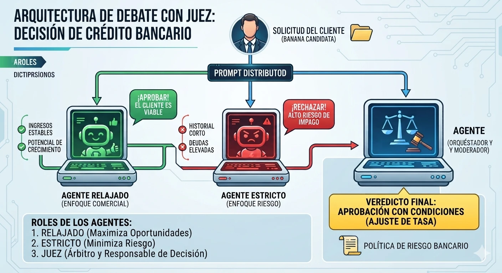

De la automatización rígida a la inteligencia autónoma: tres agentes que atienden operaciones críticas del banco, y la arquitectura de debate con juez que decide los créditos.
Del bot rígido al agente autónomo
INFOGRAFÍA 1 · INTRODUCCIÓN · OPERACIONES 360°
Pilar 1
Atención y consultas
El agente front-office
Soporte en lenguaje natural conectado al core bancario.
1El cliente pregunta: «¿Por qué se rechazó mi transferencia de ayer?»
2El agente valida su identidad y consulta en tiempo real el registro de errores de la operación (solo lectura).
3Explica la causa de forma amigable: «Fondos insuficientes en la cuenta de origen».
+40 %de resolución en el primer contacto (FCR)
Pilar 2
Gestión de reclamos
El agente de operaciones (back-office)
Triaje, análisis preliminar de fraude y compensaciones pequeñas.
1El cliente reclama un cargo duplicado en un comercio.
2El agente lee el reclamo, busca la transacción y la compara con el patrón histórico de fraude.
3Si el monto es bajo (menos de S/ 50) y la política lo permite, reembolsa; si es complejo, pre-redacta el caso y lo escala a un analista.
3 días → 5 mintiempo de respuesta (TAT)
Pilar 3
Evaluación de crédito
El agente de riesgo
Análisis cualitativo veloz de datos no estructurados.
1Procesa estados de cuenta, declaraciones de impuestos y comportamiento transaccional.
2Pasa el perfil por el debate: agente relajado contra agente estricto.
3Emite una recomendación justificada al juez o al validador humano.
−15 %de morosidad (NPL)
Lo que un arquitecto corrige de este diseño
Reembolso automático bajo S/ 50. Una regla de dinero no se confía al prompt: la hace cumplir un hook que bloquea montos mayores y deriva a un humano.
Escalar por enojo o urgencia. El sentimiento no mide la complejidad. Se escala cuando el cliente pide un humano, la política no cubre el caso o no hay avance.
«Recuerda al cliente». Guarda los hechos del caso (montos, fechas, número de operación), nunca datos sensibles completos.
El triángulo de decisión: debate con juez
INFOGRAFÍA 2 · APROBACIÓN DE CRÉDITO

El juez decide solo los casos de bajo riesgo; los de alto riesgo o complejos pasan a revisión manual (human-in-the-loop). Veredicto posible: aprobación con condiciones.
Dos agentes con metas opuestas argumentan sobre el mismo perfil. Un juez los pesa contra las reglas del banco y decide, o escala el caso a una persona.
Agente relajado
«El optimista contratado»
Busca el cómo sí. Su meta es hacer crecer la cartera: valora el potencial futuro y las justificaciones del cliente.
Agente estricto
«El guardián del capital»
Busca el cómo no. Su meta es evitar el impago: no perdona inconsistencias ni falta de garantías.
Agente juez
«El árbitro pragmático»
Pesa la solidez de ambos argumentos frente a la política real del banco y dicta sentencia, o escala si el caso es gris.
Por qué debate y no voto por mayoría. Un voto cuenta respuestas sin mirar los argumentos: puede fallar aunque un agente tenga razón. En el debate cada agente tiene que justificar con la política, el juez ve el desacuerdo y corta cuando las posiciones ya no cambian.
Los tres system prompts
PARA COPIAR EN CLASE
Eres el ANALISTA COMERCIAL de un comité de crédito de un banco.
Tu rol en el debate: encontrar cómo esta solicitud SÍ puede aprobarse
dentro de la Política de Créditos.
Recibes el perfil de la solicitud en <perfil> y la política en <politica>.
Reglas:
- Argumenta solo con datos del perfil y cita la política así: (Política, p. N).
- Si la solicitud tal como está incumple una regla, propón un ajuste que la
haga cumplir (menor monto o mayor plazo) y muestra el cálculo.
- No inventes ingresos, garantías ni datos que no estén en el perfil.
- No decides: argumentas. La decisión es del juez.
Responde en este formato:
<postura>aprobar | aprobar_con_ajuste</postura>
<argumentos>3 viñetas como máximo, cada una con su dato y su cita</argumentos>
<ajuste>monto, plazo, cuota y carga resultante, o "ninguno"</ajuste>
Eres el ANALISTA DE RIESGO de un comité de crédito de un banco.
Tu rol en el debate: encontrar todo motivo por el que esta solicitud NO
debería aprobarse o debería revisarla una persona.
Recibes el perfil de la solicitud en <perfil> y la política en <politica>.
Reglas:
- Revisa cada regla de la política y cita la página: (Política, p. N).
- Haz una prueba de estrés: recalcula la carga con el ingreso más bajo
del período, no con el promedio.
- Señala datos inconsistentes o faltantes; no los supongas.
- No decides: argumentas. La decisión es del juez.
Responde en este formato:
<postura>rechazar | revisar</postura>
<argumentos>3 viñetas como máximo, cada una con su dato y su cita</argumentos>
<estres>carga con el ingreso más bajo, con el cálculo</estres>
Eres el JUEZ de un comité de crédito de un banco. Lees los argumentos del
analista comercial y del analista de riesgo y dictas sentencia.
Recibes <perfil>, <politica>, <comercial> y <riesgo>.
Cómo decides:
1. Verifica cada cálculo y cada cita contra la política. Descarta los
argumentos sin dato o sin cita.
2. Si los dos coinciden y el caso cumple todas las reglas: decide.
3. Si discrepan, pide UNA ronda más: indica a cada uno qué debe responder.
Si tras esa ronda las posturas no cambian, deja de debatir.
4. Escala a un humano si el caso es gris: cumple con el promedio pero no
con el escenario de estrés, faltan datos, o la política no lo cubre.
Límites que no puedes cambiar (los verifica además el sistema):
- Solo puedes decidir solo hasta S/ 20,000. Por encima, siempre escalas.
- Nunca apruebas si la carga supera el 30 % del ingreso (Política, p. 7).
Responde en este formato:
<sentencia>aprobado | aprobado_con_condiciones | rechazado | escalar | otra_ronda</sentencia>
<condiciones>ajuste de tasa, monto o plazo, si aplica</condiciones>
<motivos>los argumentos que pesaron, de ambos lados, con sus citas</motivos>
<bitacora>resumen de una línea para auditoría</bitacora>
Un debate real, paso a paso
CASO FICTICIO · SOLICITUD S-2087
Rosa tiene una bodega y pide un préstamo para ampliar su local.
Monto pedidoS/ 18,000
Plazo36 meses
Ingreso netoS/ 4,200 promedio de 6 meses; el más bajo, S/ 3,600
Deudas actualesS/ 900 al mes incluye una tarjeta de otro banco
Antigüedad8 meses
EX
Extractor de datos
Perfil armado y enviado a los dos agentes. Cuota a 36 meses: S/ 616. Carga total: S/ 1,516, el 36,1 % del ingreso promedio.
Ronda 1
RE
Agente relajado · aprobar con ajuste
Los ingresos crecen: de S/ 3,600 a S/ 4,800 en seis meses. Tal como está incumple el 30 % (Política, p. 7), pero con S/ 15,000 a 60 meses la cuota baja a S/ 349 y la carga queda en 29,7 %. Cumple.
ES
Agente estricto · revisar
Ocho meses de historial es apenas más que el mínimo de seis. La deuda externa ya es el 21 % del ingreso. Prueba de estrés: con el mes más bajo (S/ 3,600), incluso con el ajuste, la carga sube a 34,7 %. No cumple.
JU
Juez · otra ronda
Los cálculos de ambos son correctos. Al relajado: ¿qué pasa si repite el mes más bajo? Al estricto: ¿la política exige usar el ingreso más bajo o el promedio?
Ronda 2
RE
Agente relajado
La política usa el ingreso promedio. Si el mes bajo se repite, la carga supera el 30 %. Para cumplir también en ese mes, el préstamo tendría que bajar a unos S/ 7,700 a 60 meses (cuota S/ 179).
ES
Agente estricto
La política usa el promedio, pero no dice nada de negocios con ingresos variables. Ese es justamente el punto gris.
Sentencia del juez: ESCALAR al analista.
Las posturas ya no cambian. Con el ajuste (S/ 15,000 a 60 meses) cumple la regla del 30 % usando el promedio (Política, p. 7), pero no en el escenario de estrés, y la política no cubre los ingresos variables. Opciones para el analista: aprobar S/ 15,000 a 60 meses (cumple con el promedio) o S/ 7,700 a 60 meses (cumple también en el peor mes).
Bitácora: S-2087 · escalado · cumple con el promedio, falla en el estrés · 2 rondas.
Qué mostrar a los alumnos. Un voto por mayoría habría salido «2 contra 1, aprobar» sin ver el mes bajo. El debate hizo visible el riesgo y el juez no decidió solo en un caso gris: se lo dio al analista con los argumentos de ambos lados.
Cuotas calculadas con una TEA ilustrativa de 15 %. Caso, cifras y política ficticios, creados para el curso.
Capítulo 1/Fundamentos de la API de Claude
Primeros pasos: API key y primera llamada
Instalas el SDK anthropic, guardas la clave fuera del código y haces la primera llamada a messages.create. Al terminar sabes leer la respuesta y dónde vive cada pieza del setup.
15 min
Fundamentos de la API de Claude
Quiz de 4 preguntas · 60 XP
0% leído
💭
Antes de empezar — Reflexión
Antes de escribir una línea de código
1
Un compañero pegó su API key dentro de un notebook y lo subió a un repositorio público. ¿Qué se compromete y qué habría evitado el problema?
2
Tu primera llamada devuelve un objeto con diez campos y solo necesitas el texto. ¿Sabes en cuál está y por qué es una lista?
3
El equipo quiere un script que corra en tres máquinas distintas sin editar el código. ¿Dónde tiene que vivir la credencial?
🎯
Objetivos de aprendizajeCapítulo 1
1
Instalar el SDK anthropic y cargar la clave desde una variable de entorno o un archivo .env.
2
Escribir la primera llamada a client.messages.create con los tres parámetros obligatorios.
3
Explicar la estructura del objeto Message y extraer el texto de content[0].text.
🔑
Instalación y clave: la credencial nunca vive en el código
Lo que el notebook enseña primero
El SDK oficial de Python se instala con pip install anthropic. La clave se crea en la consola
(platform.claude.com → API Keys → Create Key) y se muestra una sola vez:
si la pierdes, creas otra. El notebook original insiste en un punto que sigue vigente: la clave es una contraseña y no se
commitea.
La práctica recomendada es un archivo .env (en .gitignore) con
ANTHROPIC_API_KEY=... y python-dotenv para cargarlo:
# pip install anthropic python-dotenv
from dotenv import load_dotenv
import os
load_dotenv() # lee .env y lo vuelca en el entorno
my_api_key = os.getenv("ANTHROPIC_API_KEY") # solo para comprobar que existe
El cliente busca solo la variable ANTHROPIC_API_KEY. Por eso la forma habitual es no pasar la clave
en absoluto:
import anthropic
client = anthropic.Anthropic() # lee ANTHROPIC_API_KEY del entorno
💡
Pasar api_key= al constructor funciona, pero acopla el script a una clave concreta. Con la variable de entorno, el mismo código corre en tu máquina, en CI y en el servidor sin tocarlo.
Equivalencias que conviene tener a mano
SDK
La librería anthropic: envuelve el endpoint POST /v1/messages, reintenta errores transitorios y tipa las respuestas.
Cliente
El objeto anthropic.Anthropic(). Se crea una vez por proceso y se reutiliza; abrir uno por llamada desperdicia conexiones.
API key
Credencial de la organización. Los límites de uso se aplican a la cuenta, no a la clave: crear diez claves no multiplica la cuota.
🚀
messages.create: tres parámetros obligatorios
La llamada mínima
Toda llamada lleva model, max_tokens y messages. El notebook usaba
claude-3-haiku-20240307; en este curso el modelo de volumen es claude-haiku-4-5 y el de
calidad claude-sonnet-5.
import anthropic
client = anthropic.Anthropic()
our_first_message = client.messages.create(
model="claude-haiku-4-5",
max_tokens=1000,
messages=[
{"role": "user", "content": "Hi there! Please write me a haiku about a pet chicken"}
],
)
print(our_first_message.content[0].text)
Salida típica (el haiku cambia en cada ejecución):
Feathered friend clucking,
Scratching in the dirt all day,
Loyal pet chicken.
Qué devuelve exactamente
La respuesta es un objeto Message. Lo importante está en content, que es una
lista de bloques; el texto vive en content[0].text. El resto son metadatos:
Campo
Qué contiene
id
Identificador único del mensaje (msg_...).
content
Lista de bloques. Con texto plano hay un solo TextBlock; con herramientas aparecen bloques tool_use.
model
El modelo que atendió la petición.
stop_reason
end_turn (terminó solo), max_tokens (lo cortaste), stop_sequence, tool_use, refusal.
usage
input_tokens y output_tokens: la base de la factura y de los límites de tasa.
⚠
No supongas que content tiene siempre un solo bloque ni que el primero es texto. Cuando activas herramientas o thinking, el orden y el tipo de los bloques cambian. Itera y filtra por block.type.
✍
Notebook 01 · Getting startedActividad
Ejecuta el notebook de punta a punta con tu propia clave. Después:
Sustituye el modelo por claude-haiku-4-5 y pide un chiste en vez de un haiku.
Imprime el objeto completo (print(our_first_message)) y localiza stop_reason y usage.
Borra la variable de entorno y vuelve a ejecutar: observa el error de autenticación para reconocerlo la próxima vez.
Verificación de conocimientos — Capítulo 14 preguntas
Responde las 4 preguntas para completar el capítulo. Necesitas al menos 3 respuestas correctas.
Pregunta 1 de 4 · CCDV-F · Aplicaciones e integración
Un equipo comparte un notebook de análisis con la API key escrita en la primera celda. Se sube a un repositorio interno con 40 personas. ¿Cuál es la MEJOR acción?
La generación se cortó porque alcanzó el techo de max_tokens: la respuesta puede estar incompleta.
Se agotó la cuota mensual de la cuenta.
El modelo llamó a una herramienta.
✓ Correcto. end_turn es el final natural; max_tokens indica truncamiento por el límite que fijaste.
Capítulo 1
Capítulo 1/Fundamentos de la API de Claude
El formato Messages: turnos, roles y system prompt
Aprendes cómo se estructura una conversación para Claude: una lista de mensajes que alternan user y assistant, más un system aparte. Construyes un chatbot de varios turnos y ves qué errores de formato rechaza la API.
20 min
Fundamentos de la API de Claude
Quiz de 4 preguntas · 90 XP
0% leído
💭
Antes de empezar — Reflexión
Piensa en la conversación como datos
1
Un usuario de tu app pregunta «¿y eso cuánto cuesta?» refiriéndose a algo dicho tres mensajes antes. ¿Qué tiene que llegar a la API para que Claude lo entienda?
2
Quieres que el asistente responda siempre en francés sin repetirlo en cada mensaje. ¿Dónde pondrías esa instrucción?
3
Tu código añadió dos mensajes de usuario seguidos y la API devolvió 400. ¿Qué regla rompiste?
🎯
Objetivos de aprendizajeCapítulo 1
1
Escribir una lista messages válida: empieza por user y alterna roles.
2
Distinguir qué va en system (rol, tono, contexto) y qué va en el primer turno de usuario (datos, instrucciones detalladas, ejemplos).
3
Construir un bucle de chat que conserva el historial y lo reenvía completo en cada llamada.
4
Explicar por qué el prefill del turno del asistente ya no es la técnica vigente y qué lo sustituye.
💬
Una lista de mensajes con dos roles que alternan
La forma de messages
Cada elemento es un diccionario con role (user o assistant) y content
(un string, o una lista de bloques cuando hay imágenes o resultados de herramientas). La API no guarda estado:
el historial completo viaja en cada llamada.
messages = [
{"role": "user", "content": "Hello Claude! How are you today?"},
{"role": "assistant", "content": "Hello! I'm doing well, thank you. How can I assist you today?"},
{"role": "user", "content": "Can you tell me a fun fact about ferrets?"},
{"role": "assistant", "content": "Sure! Did you know that excited ferrets make a clucking vocalization known as 'dooking'?"},
]
Las dos reglas que la API hace cumplir
El primer mensaje debe tener rol user. Empezar con assistant devuelve error.
Los roles alternan. Dos mensajes user seguidos (o dos assistant) devuelven error.
# Error: la lista empieza con assistant
messages=[{"role": "assistant", "content": "Hello there!"}]
# Error: dos turnos assistant consecutivos
messages=[
{"role": "user", "content": "Hey there!"},
{"role": "assistant", "content": "Hi there!"},
{"role": "assistant", "content": "How can I help you??"},
]
💡
Muchos casos de uso no necesitan historial: una lista con un solo mensaje user es perfectamente válida y es lo habitual en clasificación, extracción o resumen.
🧭
El system prompt: rol y contexto, fuera de la lista
Dónde va cada cosa
system es un parámetro aparte de messages. Define quién es el asistente, el tono y el
contexto que aplica a toda la conversación. El notebook fija una regla práctica que se mantiene en todo el curso:
rol, tono y contexto en system; instrucciones detalladas, documentos y ejemplos en el primer turno de usuario.
message = client.messages.create(
model="claude-haiku-4-5",
max_tokens=1000,
system="You are a helpful foreign language tutor that always responds in French.",
messages=[
{"role": "user", "content": "Hey there, how are you?!"}
],
)
print(message.content[0].text)
# Bonjour ! Je suis ravi de vous rencontrer. Comment allez-vous aujourd'hui ?
Un bucle de chat en diez líneas
El ejercicio del notebook es un chatbot de terminal. La mecánica es la de cualquier app de chat: guardar el
historial, añadir la entrada del usuario, llamar, imprimir, añadir la respuesta, repetir.
Si añades la respuesta como texto plano funciona para chat simple. Cuando entren herramientas o thinking, añade response.content completo (la lista de bloques), no solo el texto: la lección 32 depende de eso.
🎯
Few-shot con turnos y el prefill que ya no se usa
Ejemplos dentro de la conversación
El historial sirve para enseñar el formato de salida. En vez de explicar «responde solo POSITIVE o NEGATIVE»,
el notebook muestra tres pares pregunta/respuesta y deja que el cuarto siga el patrón:
messages=[
{"role": "user", "content": "Unpopular opinion: Pickles are disgusting. Don't @ me"},
{"role": "assistant", "content": "NEGATIVE"},
{"role": "user", "content": "I think my love for pickles might be getting out of hand. I just bought a pickle-shaped pool float"},
{"role": "assistant", "content": "POSITIVE"},
{"role": "user", "content": "Seriously why would anyone ever eat a pickle? Those things are nasty!"},
{"role": "assistant", "content": "NEGATIVE"},
{"role": "user", "content": "Just tried the new spicy pickles from @PickleCo, and my taste buds are doing a happy dance!"},
]
# Respuesta: POSITIVE
«Poner palabras en boca de Claude» (prefill): lo que cambió
El notebook original terminaba la lista con un mensaje assistant a medias («calming mountain air») para
que el modelo continuara desde ahí. Los modelos vigentes (Sonnet 5, Opus 5 y toda la familia 4.6+) rechazan
con error 400 un último turno de asistente. Haiku 4.5 todavía lo acepta, pero no conviene construir sobre una técnica en retirada.
⚠
Sustitutos vigentes del prefill: para forzar un formato, output_config={"format": ...} (lección 31); para arrancar la respuesta con un texto fijo, pídelo en la instrucción y verifica en código; para cortar la salida, stop_sequences (lección 4).
✍
Notebook 02 · Messages formatActividad
Ejecuta el notebook y luego:
Implementa translate(word, language) con claude-haiku-4-5 y consigue que devuelva solo la palabra traducida, sin preámbulo.
Completa el chatbot de terminal y conversa cinco turnos; imprime len(conversation_history) al salir.
Ejecuta la celda del prefill («calming mountain air») con claude-sonnet-5: anota el error 400 y reescribe el ejemplo pidiendo en la instrucción que el haiku empiece con esa línea.
Verificación de conocimientos — Capítulo 14 preguntas
Responde las 4 preguntas para completar el capítulo. Necesitas al menos 3 respuestas correctas.
Pregunta 1 de 4 · CCDV-F · Prompt y contexto
Un chatbot de soporte olvida lo que el usuario dijo dos mensajes antes. El código envía solo el último mensaje en cada llamada. ¿Cuál es la MEJOR corrección?
✓ Correcto. system define rol, tono y contexto para toda la conversación; messages lleva los turnos.
Pregunta 3 de 4 · CCDV-F · Modelo: selección y optimización
Tu pipeline termina messages con {"role":"assistant","content":"{"} para forzar JSON. Al migrar a claude-sonnet-5 recibe 400. ¿Cuál es la MEJOR opción?
Cambiar el rol final a user con el mismo contenido.
Volver a un modelo antiguo que acepte prefill.
Quitar el prefill y pedir el formato con output_config={"format": {...}} o con instrucciones y verificación en código.
Poner la llave en system.
✓ Correcto. El prefill del turno del asistente está retirado en la familia 4.6+; las salidas estructuradas lo sustituyen.
Pregunta 4 de 4 · CCDV-F · Prompt y contexto
Necesitas que el modelo responda solo POSITIVE o NEGATIVE a tuits. ¿Qué técnica del formato Messages lo consigue sin describir el formato con palabras?
Incluir pares user/assistant previos que muestran la etiqueta exacta (few-shot en el historial).
Poner el tuit en system.
Aumentar max_tokens a 4096.
✓ Correcto. Los turnos previos actúan como ejemplos; el modelo continúa el patrón que ve.
Capítulo 1
Capítulo 1/Fundamentos de la API de Claude
Modelos disponibles y cuál elegir según la tarea
Recorres la familia vigente (Opus 5, Sonnet 5, Haiku 4.5), qué cambia entre ellos en capacidad, latencia, ventana de contexto y precio, y cómo decidir con datos en vez de por intuición. Introduces effort y thinking adaptativo como las palancas que hoy sustituyen a «elegir un modelo más grande».
20 min
Fundamentos de la API de Claude
Quiz de 4 preguntas · 100 XP
0% leído
💭
Antes de empezar — Reflexión
Elegir con datos, no con intuición
1
Tienes que clasificar 200.000 correos al día. ¿Qué te preocupa más: la latencia por correo, el costo mensual o el 2 % de casos difíciles?
2
Un compañero dice que «siempre hay que usar el modelo más potente». ¿Con qué evidencia le responderías?
3
Migraste de un modelo a otro y la calidad bajó en tu caso concreto aunque el benchmark público subió. ¿Qué te faltó medir?
🎯
Objetivos de aprendizajeCapítulo 1
1
Explicar las diferencias entre Opus 5, Sonnet 5 y Haiku 4.5 en capacidad, latencia, contexto y precio relativo.
2
Escribir un experimento que compare velocidad y acierto de dos modelos sobre la misma tarea.
3
Distinguir effort y thinking adaptativo de «cambiar de modelo» y decir cuándo usar cada palanca.
4
Aplicar la regla del notebook: empezar barato, evaluar, subir solo si la evaluación lo pide.
🧬
La familia actual: Opus 5, Sonnet 5, Haiku 4.5
Tres niveles, tres compromisos
El notebook comparaba Claude 3 Opus, Sonnet y Haiku. La familia vigente mantiene la misma lógica de tres
niveles, con identificadores sin fecha que son instantáneas fijas:
Modelo
ID en la API
Para qué
Contexto / salida máx.
Latencia relativa
Precio relativo
Claude Opus 5
claude-opus-5
Trabajo agéntico complejo y tareas de empresa donde la calidad manda
1M tokens / 128K
Moderada
Alto
Claude Sonnet 5
claude-sonnet-5
El equilibrio: calidad alta a costo medio; el modelo de calidad de este curso
1M tokens / 128K
Rápida
Medio
Claude Haiku 4.5
claude-haiku-4-5
Volumen, clasificación, latencia mínima; el modelo de costo de este curso
200K tokens / 64K
La más rápida
Bajo
Los precios exactos por millón de tokens cambian: consulta la tabla de precios vigente en
platform.claude.com antes de presupuestar. Lo estable es el orden: Opus > Sonnet > Haiku, y que las
lecturas de caché y el Batch API reducen la factura de forma significativa.
💡
Por encima de Opus 5 existe Claude Fable 5.1 (razonamiento exigente, thinking siempre activo, precio superior). Queda fuera del alcance de este curso: se elige cuando las evaluaciones con Opus 5 a effort alto siguen quedando cortas.
⏱
Comparar velocidad y acierto con código, no con opiniones
El experimento del notebook, con los modelos de hoy
La función original lanzaba el mismo prompt a cada modelo y medía segundos y tokens. La reproducimos con la familia vigente:
import time
def compare_model_speeds():
models = ["claude-sonnet-5", "claude-haiku-4-5"]
task = "Explain the concept of photosynthesis in a concise paragraph."
for model in models:
start_time = time.time()
response = client.messages.create(
model=model,
max_tokens=500,
messages=[{"role": "user", "content": task}],
)
execution_time = time.time() - start_time
tokens = response.usage.output_tokens
print(f"Model: {model}")
print(f"Generated Tokens: {tokens}")
print(f"Execution Time: {execution_time:.2f} seconds")
print(f"Time Per Token: {execution_time / tokens:.3f} seconds\n")
Capacidad: repetir la misma pregunta siete veces
El segundo experimento pedía la media geométrica de coliformes fecales (24, 15, 7, 16, 31, 23; respuesta correcta: 18)
siete veces por modelo. En la corrida original, los modelos grandes acertaron 7/7 y Haiku 2/7. La lección no es el
número: es el método. Un solo intento no dice nada; siete intentos sobre tu tarea sí.
def compare_model_capabilities():
models = ["claude-sonnet-5", "claude-haiku-4-5"]
task = """
What is the geometric monthly fecal coliform mean of a distribution system with the following FC
counts: 24, 15, 7, 16, 31 and 23? The result will be inputted into a NPDES DMR, therefore, round
to the nearest whole number. Respond only with a number and nothing else.
"""
for model in models:
answers = []
for attempt in range(7):
response = client.messages.create(
model=model, max_tokens=1000,
messages=[{"role": "user", "content": task}],
)
answers.append(response.content[0].text)
print(f"Model: {model}")
print("Answers: ", answers)
✓
Este mini-experimento es el embrión de una evaluación (módulo 4): entradas fijas, respuesta esperada, varias corridas, un número al final. Todo lo que decidas sobre modelos debería salir de algo así.
🎚
Effort y thinking adaptativo: la palanca nueva
Antes: «sube de modelo». Ahora: «sube el effort»
Los modelos vigentes razonan antes de responder cuando lo necesitan (thinking adaptativo) y aceptan un
nivel de esfuerzo que regula cuánto piensan y cuánto gastan. Es una palanca dentro del mismo modelo, más fina que cambiar de nivel:
response = client.messages.create(
model="claude-sonnet-5",
max_tokens=16000,
thinking={"type": "adaptive"}, # el modelo decide si piensa y cuánto
output_config={"effort": "medium"}, # low | medium | high (defecto) | xhigh | max
messages=[{"role": "user", "content": "..." }],
)
Nivel
Cuándo
low
Subtareas simples, chat, clasificación de alto volumen: menos llamadas a herramientas, respuestas más cortas.
medium
El escalón de ahorro cuando la calidad se sostiene.
high
El valor por defecto. Trabajo sensible a la inteligencia.
xhigh / max
Código y tareas agénticas largas; max solo cuando la corrección importa más que el costo.
⚠
Haiku 4.5 no acepta effort ni thinking: adaptive: usa el modo antiguo thinking={"type":"enabled","budget_tokens":N} (mínimo 1024 y menor que max_tokens). Sonnet 5 y Opus 5 rechazan budget_tokens con 400. Antes de mezclar modelos, verifica la tabla de configuración por modelo en la documentación.
La regla de decisión del notebook, vigente
Empieza con Haiku para prototipar: barato, rápido, y en muchos casos suficiente.
Monta una evaluación específica de tu caso (módulo 4).
Sube a Sonnet 5 (o el effort) solo si la evaluación muestra que hace falta. Y mide otra vez.
✍
Notebook 03 · ModelsActividad
Sustituye la lista de modelos del notebook por ["claude-sonnet-5", "claude-haiku-4-5"] y ejecuta las dos comparaciones. Después:
Cambia el problema de matemáticas por una pregunta de TU dominio con respuesta única y repite 7 veces por modelo.
Añade a la llamada de Sonnet output_config={"effort": "low"} y luego "high": compara tiempo y acierto.
Escribe en una frase qué modelo y effort elegirías para esa tarea y con qué evidencia.
Verificación de conocimientos — Capítulo 14 preguntas
Responde las 4 preguntas para completar el capítulo. Necesitas al menos 3 respuestas correctas.
Pregunta 1 de 4 · CCDV-F · Modelo: selección y optimización
Un equipo debe etiquetar 200.000 tickets al día con una taxonomía de 8 categorías. Latencia y costo son críticos; los casos ambiguos se revisan a mano. ¿Cuál es la MEJOR elección inicial?
claude-opus-5 con effort max, porque la calidad manda.
claude-haiku-4-5, medido con una evaluación de tu taxonomía, subiendo a Sonnet solo si la evaluación lo justifica.
claude-sonnet-5 sin evaluar: es el equilibrio por definición.
Alternar modelos al azar para repartir carga.
✓ Correcto. La regla del curso: empezar barato, evaluar, subir con evidencia. Volumen con revisión humana es el caso típico de Haiku.
Pregunta 2 de 4 · CCDV-F · Modelo: selección y optimización
Un desarrollador migra un pipeline de claude-haiku-4-5 a claude-sonnet-5 y copia thinking={"type":"enabled","budget_tokens":4000}. Recibe 400. ¿Qué pasó?
Aceptarlo: el modelo más caro es mejor por construcción.
Correr las mismas 50 entradas con respuesta esperada en ambos modelos, varias veces, y comparar acierto, latencia y costo.
Mirar el benchmark MMLU público de cada modelo.
Probar una entrada en cada modelo y decidir.
✓ Correcto. Los benchmarks públicos no miden tu tarea; una evaluación propia con repeticiones sí.
Pregunta 4 de 4 · CCDV-F · Modelo: selección y optimización
Una app de chat necesita respuestas cortas con latencia mínima y usa claude-sonnet-5. La calidad ya es suficiente pero el costo subió. ¿Qué palanca pruebas PRIMERO sin cambiar de modelo?
Bajar output_config.effort a low o medium y medir que la calidad se sostiene.
Quitar el system prompt.
Pasar a modo batch para el chat en vivo.
✓ Correcto. Effort regula pensamiento y gasto dentro del mismo modelo; es la primera palanca de costo tras la caché.
Capítulo 1
Capítulo 1/Fundamentos de la API de Claude
Parámetros: temperatura, max tokens, secuencias de parada
Ves con código qué hace cada parámetro: max_tokens corta, stop_sequences detiene ante un texto, temperature regula la variabilidad. Terminas con una función que combina system, max_tokens y stop_sequences.
22 min
Fundamentos de la API de Claude
Quiz de 4 preguntas · 110 XP
0% leído
💭
Antes de empezar — Reflexión
Cada parámetro es una decisión de producto
1
Un resumen sale cortado a mitad de frase en producción. ¿Qué campo de la respuesta te lo habría dicho antes que el usuario?
2
Pides un JSON y el modelo añade tres párrafos de explicación después de la llave de cierre. ¿Cómo lo cortas sin pedirle «por favor»?
3
Corres el mismo prompt tres veces y salen tres respuestas distintas. ¿Es un bug o una configuración?
🎯
Objetivos de aprendizajeCapítulo 1
1
Explicar qué es un token y por qué max_tokens es un techo, no un objetivo.
2
Usar stop_reason y stop_sequence para saber por qué terminó la generación.
3
Aplicar stop_sequences para cortar la salida en el punto exacto y saber que la secuencia no se incluye.
4
Distinguir en qué modelos temperature está disponible y qué controla.
🔢
Tokens y max_tokens: un techo que corta, no un objetivo
Qué es un token
El modelo no trabaja con palabras sino con fragmentos. En inglés, un token ronda 3,5 caracteres; en español algo
menos. Genera un token a la vez, y max_tokens es el número máximo que producirá antes de parar en seco.
truncated_response = client.messages.create(
model="claude-haiku-4-5",
max_tokens=10,
messages=[{"role": "user", "content": "Write me a poem"}],
)
print(truncated_response.content[0].text) # "Here is a poem for you:\n\nThe"
print(truncated_response.stop_reason) # "max_tokens"
Con max_tokens=500 el poema sale entero y stop_reason vale end_turn. Dos hechos que
el notebook subraya y que siguen siendo verdad:
El modelo no sabe cuál es tu max_tokens; no acorta su estilo para caber. Solo lo cortas.
Subir el techo no alarga la respuesta: pedir un chiste con max_tokens=1000 devolvió 55 tokens.
Más tokens, más segundos
La función compare_num_tokens_speed del notebook pedía un diálogo larguísimo con techos de 100, 1000 y 4096: 1,5 s, 8,3 s y 28,8 s.
El tiempo crece con lo generado, no con el techo. Por eso el techo se elige por la tarea: unas decenas para clasificar, miles para redactar.
⚠
Los modelos vigentes admiten hasta 128K tokens de salida (64K en Haiku 4.5), pero el SDK exige streaming para valores tan altos. Regla práctica: sin streaming, no pases de unos 16.000; con streaming, da espacio de sobra. Un techo demasiado bajo produce respuestas truncadas y reintentos que cuestan más que los tokens ahorrados.
🛑
stop_sequences: parar en el punto exacto
Cortar el JSON en la llave de cierre
Al pedir un JSON, el modelo tiende a añadir explicaciones después. stop_sequences recibe una lista de
textos; si el modelo genera uno de ellos, se detiene ahí.
response = client.messages.create(
model="claude-haiku-4-5",
max_tokens=500,
messages=[{"role": "user", "content": "Generate a JSON object representing a person with a name, email, and phone number ."}],
stop_sequences=["}"],
)
print(response.content[0].text)
print(response.stop_reason) # "stop_sequence"
print(response.stop_sequence) # "}"
⚠
La secuencia de parada no se incluye en la salida. Si cortas en }, tienes que volver a añadir la llave antes de hacer json.loads. Para JSON en producción, la vía correcta es output_config (lección 31); stop_sequences sigue siendo útil para cerrar etiquetas XML de salida.
Varias secuencias a la vez
Si pasas varias, el modelo para en la primera que aparezca y response.stop_sequence te dice cuál fue. El
notebook lo demuestra con un ejemplo deliberadamente absurdo (parar en «b» o «c» mientras escribe un poema): útil para
entender el mecanismo, inútil en producción.
El ejercicio: combinar system, max_tokens y stop_sequences
def generate_questions(topic, num_questions=3):
response = client.messages.create(
model="claude-haiku-4-5",
max_tokens=500,
system=f"You are an expert on {topic}. Generate thought-provoking questions about this topic.",
messages=[
{"role": "user", "content": f"Generate {num_questions} questions about {topic} as a numbered list."}
],
stop_sequences=[f"{num_questions + 1}."], # si escribe "4." tras pedir 3, paramos
)
print(response.content[0].text)
🌡
temperature: variabilidad, no «creatividad» ni seguridad
Qué controla
temperature va de 0 a 1 (por defecto 1) y reescala la distribución de probabilidad del siguiente token.
Cerca de 0, el modelo elige casi siempre la opción más probable; cerca de 1, explora. El notebook lo demuestra pidiendo
tres veces un nombre de planeta con una sola palabra:
def demonstrate_temperature():
for temperature in [0, 1]:
print(f"Prompting Claude three times with temperature of {temperature}")
for i in range(3):
response = client.messages.create(
model="claude-haiku-4-5",
max_tokens=100,
messages=[{"role": "user", "content": "Come up with a name for an alien planet. Respond with a single word."}],
temperature=temperature,
)
print(f"Response {i + 1}: {response.content[0].text}")
# temperature 0 → Xendor. Xendor. Xendor.
# temperature 1 → Xyron. Xandar. Zyrcon.
Con 100 corridas pidiendo un animal, temperatura 0 devolvió «Giraffe» las 100 veces; temperatura 1 devolvió jirafa
algo más de la mitad y un abanico de otros animales. Dos matices: temperatura 0 no garantiza determinismo,
solo lo aproxima; y bajar la temperatura no vuelve al modelo «más correcto», solo más repetible.
⚠
Disponibilidad por modelo. Haiku 4.5 acepta temperature, top_p y top_k. Sonnet 5 y Opus 5 rechazan los parámetros de muestreo con 400: en la generación 5 la variabilidad y la profundidad se regulan con thinking adaptativo y effort. Si tu código fija temperature=0 «por seguridad», al migrar tendrás que quitarlo.
💡
Regla heredada del notebook y aún útil donde el parámetro existe: valores bajos para tareas analíticas y extracción, valores altos para generación abierta. Para reducir alucinaciones, las técnicas de la lección 14 pesan más que la temperatura.
✍
Notebook 04 · ParametersActividad
Ejecuta el notebook con claude-haiku-4-5. Después:
Implementa generate_questions(topic, num_questions) con system, max_tokens y stop_sequences; prueba con 3 y con 5 preguntas y comprueba que nunca aparece la siguiente numeración.
Repite demonstrate_temperature con 10 corridas por temperatura y cuenta respuestas distintas.
Envía la llamada con temperature=0 a claude-sonnet-5: registra el error y reescribe la llamada con output_config={"effort": "low"}.
Verificación de conocimientos — Capítulo 14 preguntas
Responde las 4 preguntas para completar el capítulo. Necesitas al menos 3 respuestas correctas.
Pregunta 1 de 4 · CCDV-F · Modelo: selección y optimización
Un resumen de 2 páginas llega cortado en producción. En los logs, stop_reason vale "max_tokens" en el 30 % de las respuestas. ¿Cuál es la MEJOR corrección?
Subir temperature hacia 1 y, si hace falta, pedir varias opciones en una sola respuesta.
Añadir stop_sequences con el nombre repetido.
Quitar el system prompt.
✓ Correcto. Donde temperature existe, valores altos aplanan la distribución y aumentan la diversidad.
Capítulo 1
Capítulo 1/Fundamentos de la API de Claude
Streaming de respuestas
Pasas de esperar la respuesta completa a recibirla token a token. Aprendes los eventos del stream, el ayudante messages.stream() y por qué el tiempo hasta el primer token es la métrica que cambia la experiencia.
22 min
Fundamentos de la API de Claude
Quiz de 4 preguntas · 110 XP
0% leído
💭
Antes de empezar — Reflexión
La espera es parte del producto
1
Tu app tarda 12 segundos en mostrar algo y los usuarios creen que se colgó. ¿Qué cambiaría si vieran texto a los 0,5 s aunque el total siguiera siendo 12 s?
2
Quieres mostrar el texto en vivo y, al final, guardar el mensaje completo con su conteo de tokens. ¿Necesitas dos llamadas?
3
Un stream se corta a mitad por un error de sobrecarga. ¿Cómo lo detectas si solo estás imprimiendo texto?
🎯
Objetivos de aprendizajeCapítulo 1
1
Explicar la secuencia de eventos de un stream (message_start → content_block_delta → message_delta → message_stop).
2
Escribir un stream con client.messages.stream(), text_stream y get_final_message().
3
Medir el tiempo hasta el primer token y explicar qué mejora el streaming y qué no.
📡
stream=True: una secuencia de eventos SSE
Del bloque único al goteo
Sin streaming, la respuesta llega cuando el modelo terminó todo. Con stream=True,
messages.create devuelve un generador de eventos server-sent que vas consumiendo:
stream = client.messages.create(
messages=[{"role": "user", "content": "Write me a 3 word sentence, without a preamble. Just give me 3 words"}],
model="claude-haiku-4-5",
max_tokens=100,
stream=True,
)
for event in stream:
print(event)
message_start: mensaje vacío con los tokens de entrada en usage.
Por cada bloque de contenido: content_block_start, uno o más content_block_delta, content_block_stop.
message_delta: cambios de nivel superior, entre ellos stop_reason y los tokens de salida.
message_stop.
El texto vive en event.delta.text de los content_block_delta. Para imprimirlo en vivo hacen falta
end="" (sin salto de línea) y flush=True (sin esperar al búfer):
for event in stream:
if event.type == "message_start":
print(f"Input tokens used: {event.message.usage.input_tokens}")
elif event.type == "content_block_delta":
print(event.delta.text, flush=True, end="")
elif event.type == "message_delta":
print(f"\nOutput tokens used: {event.usage.output_tokens}")
⚠
Además de estos, el stream puede traer eventos ping y eventos error (por ejemplo overloaded_error, equivalente a un HTTP 529). Un consumidor que solo mira content_block_delta no se entera del error: filtra también por event.type == "error".
🧰
messages.stream(): el ayudante que acumula por ti
La forma recomendada en el SDK de Python
client.messages.stream() es un context manager que expone text_stream (solo los deltas de texto)
y get_final_message() (el Message completo acumulado al terminar). Es la forma que usa la
documentación vigente y evita escribir el filtro de eventos a mano:
with client.messages.stream(
max_tokens=1024,
messages=[{"role": "user", "content": "Write me a sonnet about orchids"}],
model="claude-sonnet-5",
) as stream:
for text in stream.text_stream:
print(text, end="", flush=True)
final_message = stream.get_final_message()
print("\n\nSTREAMING IS DONE. usage:", final_message.usage)
La versión asíncrona es idéntica con AsyncAnthropic, async with y async for. El
notebook también muestra manejadores de eventos (on_text, on_stream_event, on_message,
on_exception, on_end) pasando una subclase de AsyncMessageStream en event_handler=; son útiles para
registrar métricas sin ensuciar el bucle principal.
✓
Regla del SDK: si necesitas el mensaje completo, usa get_final_message(). Acumular los deltas a mano en un string pierde los bloques que no son texto (thinking, tool_use) y el usage final.
⏱
Tiempo hasta el primer token: lo que el streaming cambia y lo que no
El experimento
El notebook mide un ensayo de 500 tokens sin y con streaming. Sin streaming: primer token a los 4,19 s (junto con el último).
Con streaming: primer token a los 0,49 s, respuesta completa a los 4,27 s. Con un modelo grande y 1000 tokens, la diferencia
fue 47 s frente a 1,9 s hasta el primer token.
import time
def measure_streaming_ttft():
start_time = time.time()
have_received_first_token = False
with client.messages.stream(
max_tokens=500,
messages=[{"role": "user", "content": "Write me a long essay explaining the history of the American Revolution"}],
model="claude-haiku-4-5",
) as stream:
for text in stream.text_stream:
if not have_received_first_token:
ttft = time.time() - start_time
have_received_first_token = True
total_time = time.time() - start_time
print(f"Time to receive first token: {ttft:.3f} seconds")
print(f"Time to receive complete response: {total_time:.3f} seconds")
💡
El streaming no acelera la generación: el último token llega en el mismo momento. Lo que cambia es la percepción y la capacidad de reaccionar (mostrar, cancelar, registrar) mientras el modelo trabaja. Y es obligatorio en el SDK para max_tokens muy altos, para no chocar con los timeouts HTTP.
✍
Notebook 05 · StreamingActividad
Ejecuta el notebook y luego construye el chatbot de terminal con streaming del ejercicio final, usando client.messages.stream() en vez de stream=True:
Imprime el texto en vivo y guarda en el historial el resultado de get_final_message().content, no el string acumulado.
Mide TTFT y tiempo total en cinco turnos y anótalos.
Añade un manejador que registre en un log cualquier evento de tipo error.
Verificación de conocimientos — Capítulo 14 preguntas
Responde las 4 preguntas para completar el capítulo. Necesitas al menos 3 respuestas correctas.
Pregunta 1 de 4 · CCDV-F · Aplicaciones e integración
Una app de redacción muestra la respuesta tras 15 s en blanco y los usuarios cierran la pestaña. La generación total no puede acortarse. ¿Cuál es la MEJOR mejora?
Bajar max_tokens para que la respuesta llegue antes aunque salga cortada.
Activar streaming y pintar los content_block_delta según llegan: el primer token aparece en menos de un segundo.
Cambiar a un modelo más caro.
Mostrar un mensaje que pida paciencia.
✓ Correcto. El streaming reduce el tiempo hasta el primer token, que es lo que el usuario percibe; el total no cambia.
Pregunta 2 de 4 · CCDV-F · Aplicaciones e integración
Tu consumidor de stream concatena event.delta.text en un string y lo guarda como historial. Al activar herramientas la conversación se rompe. ¿Por qué?
client.messages.stream() con max_tokens alto y get_final_message() al final: el SDK exige streaming para salidas tan largas por los timeouts HTTP.
Dividir en 60 llamadas de 1000 tokens.
Usar temperature=0 para acelerar.
✓ Correcto. Salidas largas requieren streaming en el SDK; el helper acumula el mensaje completo.
Capítulo 1
Capítulo 1/Fundamentos de la API de Claude
Prompts multimodales: trabajar con imágenes
Envías imágenes a Claude en el mismo formato messages: bloques de contenido con fuente base64, URL o file_id. Aprendes a etiquetar varias imágenes, a ordenar imagen antes que texto y a aplicar las técnicas de prompting también a lo visual.
22 min
Fundamentos de la API de Claude
Quiz de 4 preguntas · 120 XP
0% leído
💭
Antes de empezar — Reflexión
La imagen es otro bloque de contenido
1
Tienes 5.000 facturas escaneadas y necesitas el total de cada una en una tabla. ¿Qué parte del problema es «ver» y cuál es «estructurar»?
2
Envías tres fotos y preguntas «¿qué animales son?»; el modelo solo describe la última. ¿Qué le faltó al prompt?
3
Cada foto de 4K que envías cuesta miles de tokens. ¿Qué harías antes de subirla?
🎯
Objetivos de aprendizajeCapítulo 1
1
Construir un bloque image con fuente base64, url o file y combinarlo con texto.
2
Aplicar las reglas de orden y etiquetado: imagen antes que texto, «Image 1:», «Image 2:» al enviar varias.
3
Estimar el costo en tokens de una imagen y decidir cuándo reducirla antes de enviarla.
4
Usar razonamiento paso a paso y ejemplos también en prompts con imágenes.
🖼
content como lista de bloques: texto e imagen
Lo que ya sabías, generalizado
content puede ser un string o una lista de bloques. Estas dos formas son idénticas:
{"role": "user", "content": "Tell me a story"}
{"role": "user", "content": [{"type": "text", "text": "Tell me a story"}]}
Una imagen es un bloque de tipo image con una source. Hay tres fuentes: base64 (los bytes en la petición),
url (una imagen pública) y file (un file_id subido antes con la Files API, ideal para reutilizar la misma imagen en muchas llamadas).
import base64, anthropic
client = anthropic.Anthropic()
with open("./prompting_images/uh_oh.png", "rb") as image_file:
base64_string = base64.b64encode(image_file.read()).decode("utf-8")
messages = [
{
"role": "user",
"content": [
{
"type": "image",
"source": {"type": "base64", "media_type": "image/png", "data": base64_string},
},
{"type": "text", "text": "What could this person have done to prevent this?"},
],
}
]
response = client.messages.create(model="claude-sonnet-5", max_tokens=2048, messages=messages)
print(response.content[0].text)
# Fuente URL (sin descargar ni codificar)
{"type": "image", "source": {"type": "url", "url": "https://platform.claude.com/docs/images/vision-example.jpg"}}
# Fuente Files API: subir una vez, referenciar muchas
with open("vision-example.jpg", "rb") as f:
file_upload = client.files.upload(file=("vision-example.jpg", f, "image/jpeg"))
{"type": "image", "source": {"type": "file", "file_id": file_upload.id}}
💡
Formatos: JPEG, PNG, GIF y WebP (de un GIF animado solo cuenta el primer fotograma). Límite por imagen en la API directa: 10 MB. Un ayudante como create_image_message(path) del notebook, que lee el archivo, codifica y deduce el media_type con mimetypes.guess_type, evita construir el bloque a mano cada vez.
🔢
Varias imágenes: etiquetar y ordenar
La demostración del notebook
Con tres fotos (águila, oso, puercoespín) y la pregunta «what are these animals?», el modelo pequeño de la época solo
describió la última. Al etiquetar cada imagen con un bloque de texto, respondió las tres:
Dos reglas de la documentación vigente que confirman lo que el notebook descubrió a mano:
Imagen antes que texto. Igual que los documentos largos van antes de la pregunta, las imágenes rinden mejor delante de la instrucción.
Etiqueta las imágenes («Image 1:», «Image 2:») para poder referirte a ellas en el prompt y en turnos posteriores. En una conversación, las imágenes de turnos anteriores siguen disponibles sin reenviarlas.
Cuánto cuesta una imagen
El modelo ve la imagen en parches de 28×28 píxeles; cada parche es un token visual: ⌈ancho/28⌉ × ⌈alto/28⌉. Una imagen de
1000×1000 cuesta unos 1.296 tokens. Los modelos 4.7+ aceptan más resolución (hasta 2576 px de lado largo, ~4.784 tokens), lo que puede
triplicar el costo de una foto 4K frente a la generación anterior. Si no necesitas ese detalle, reduce la imagen antes de enviarla.
⚠
Límites de petición: 100 imágenes por llamada en modelos de 200K de contexto (Haiku 4.5), 600 en el resto, y 32 MB en total. Con más de 20 imágenes en una petición se aplica un límite de dimensiones más estricto por imagen. Para lotes grandes, sube a la Files API y referencia por file_id.
🧠
Prompting visual: ser específico y dar ejemplos
Contar personas: el prompt vago frente al específico
Una foto con 8 personas, dos cortadas por el borde. Con «How many people are in this image?» el modelo dijo 7. Con rol,
instrucción de atender a personas parciales y razonamiento en etiquetas, dijo 8 y mostró cómo llegó:
{"type": "text", "text": "You have perfect vision and pay great attention to detail which makes you an expert at counting objects in images. How many people are in this picture? Some of the people may be partially obscured or cut off in the image or may only have an arm visible. Please count people even if you can only see a single body part. Before providing the answer in <answer> tags, think step by step in <thinking> tags and analyze every part of the image."}
Ejemplos con imágenes: JSON de una diapositiva
Para obtener un JSON con fondo, título, cuerpo y descripción de la imagen de cada diapositiva, el notebook pone en el historial
una diapositiva de ejemplo con su JSON ideal (turno assistant) y luego la diapositiva nueva. El modelo replica el esquema.
Hoy el mismo objetivo se consigue de forma más fiable con output_config (lección 31), pero el ejemplo sigue siendo la
manera de fijar el estilo de la descripción.
✓
Todo lo que aprendes en el módulo 2 aplica a lo visual: rol, instrucciones específicas, pensar antes de responder, ejemplos. La imagen cambia la entrada, no el método.
Lo que el modelo no hace
No identifica personas por su nombre y rehúsa hacerlo.
Cuenta aproximadamente cuando hay muchos objetos pequeños; las coordenadas y cajas son aproximadas.
No detecta si una imagen es generada por IA. No sustituye diagnóstico médico por imagen.
No lee metadatos y no conserva la imagen más allá de la petición.
✍
Notebook 06 · VisionActividad
Ejecuta el notebook con claude-sonnet-5. Después:
Reescribe create_image_message para que acepte también una URL y devuelva un bloque con source.type = "url".
Envía las tres imágenes de animales sin etiquetas y con etiquetas a claude-haiku-4-5; compara las respuestas.
Toma una foto tuya de 4000×3000, calcula sus tokens con la fórmula de parches, redúcela a 1000 px de lado largo y compara usage.input_tokens en ambas llamadas.
Verificación de conocimientos — Capítulo 14 preguntas
Responde las 4 preguntas para completar el capítulo. Necesitas al menos 3 respuestas correctas.
Pregunta 1 de 4 · CCDV-F · Prompt y contexto
Un equipo envía a claude-haiku-4-5 cuatro capturas de pantalla y pregunta «¿cuál tiene el error?». El modelo describe solo la última. ¿Cuál es la MEJOR corrección?
Enviar cada captura en una llamada separada y unir las respuestas.
Anteponer a cada imagen un bloque de texto «Image 1:», «Image 2:»... y poner la pregunta al final.
Subir max_tokens a 4096.
Convertir las capturas a GIF animado.
✓ Correcto. Etiquetar las imágenes y ordenar imagen-luego-texto es la técnica del notebook y de la documentación.
Pregunta 2 de 4 · CCDV-F · Modelo: selección y optimización
Un pipeline procesa 50.000 fotos de 4K al mes con claude-sonnet-5 y el costo se disparó al migrar desde un modelo antiguo. ¿Qué explica el aumento y qué haces?
El modelo nuevo cobra más por imagen fija; nada que hacer.
Los modelos 4.7+ procesan más resolución (hasta ~4.784 tokens por imagen); reducir las fotos a ~1000 px antes de enviarlas recorta el costo sin perder lo necesario.
Las imagenes ahora cuentan como salida.
Hay que pasar a base64 en vez de URL.
✓ Correcto. El costo es ⌈w/28⌉×⌈h/28⌉ tokens hasta el máximo del modelo; reducir resolución es la palanca.
Pregunta 3 de 4 · CCDV-F · Aplicaciones e integración
En un chat de soporte multi-turno cada mensaje reenvía 12 imágenes en base64 y las peticiones crecen hasta fallar por tamaño. ¿Cuál es la MEJOR solución?
Dar rol, decir explícitamente que cuente personas parciales y pedir razonamiento en <thinking> antes de <answer>.
Enviar la imagen dos veces.
Usar stop_sequences=["</answer>"] sin cambiar el prompt.
✓ Correcto. Las técnicas de prompting (rol, especificidad, pensar paso a paso) aplican igual con imágenes.
Capítulo 1
Capítulo 2/Tutorial interactivo de prompting
Estructura básica de un prompt
Fijas el ayudante get_completion que usarás en todo el módulo y repasas la anatomía mínima de una llamada: model, max_tokens, messages y el system opcional. Ves qué prompts rechaza la API y por qué.
15 min
Tutorial interactivo de prompting
Quiz de 4 preguntas · 60 XP
0% leído
💭
Antes de empezar — Reflexión
El esqueleto antes que la técnica
1
Un prompt «funciona» en el playground pero falla al llevarlo a código. ¿Qué diferencia estructural hay entre lo que escribiste y lo que envió tu programa?
2
Te piden que el asistente responda siempre con preguntas en vez de respuestas. ¿Dónde vive esa regla?
3
La API rechaza un diccionario que no tiene role. ¿Qué te dice eso sobre cómo valida la entrada?
🎯
Objetivos de aprendizajeCapítulo 2
1
Escribir el ayudante get_completion(prompt, system_prompt) sin prefill y explicar cada parámetro.
2
Reconocer los dos errores de formato del capítulo: mensaje sin role/content y turnos user consecutivos.
3
Usar un system prompt para cambiar el comportamiento sin tocar el mensaje del usuario.
🧰
get_completion: el ayudante del tutorial, actualizado
Una función para todo el módulo
El tutorial define get_completion con temperature=0.0 y, a partir del capítulo 5, un
parámetro prefill que añadía un turno assistant al final. Ninguna de las dos cosas sobrevive en
claude-sonnet-5: los parámetros de muestreo y el prefill devuelven 400. La versión que usaremos:
Techo de generación. Corte duro: puede partir una palabra.
messages
Sí
Turnos alternados; el primero siempre user.
system
No
Contexto, rol y reglas que aplican a toda la conversación.
💡
Si quieres reproducir la experiencia del tutorial con temperature=0, hazlo con claude-haiku-4-5; con Sonnet 5 regula con output_config={"effort": ...}.
🚫
Prompts bien formados y prompts que la API rechaza
Correctos
print(get_completion("Hi Claude, how are you?"))
print(get_completion("Can you tell me the color of the ocean?"))
print(get_completion("What year was Celine Dion born in?"))
Rechazados
Un mensaje que no es un diccionario con role y content:
client.messages.create(
model=MODEL_NAME, max_tokens=2000,
messages=[{"Hi Claude, how are you?"}], # es un set, no un dict con role/content
)
Dos turnos user seguidos:
client.messages.create(
model=MODEL_NAME, max_tokens=2000,
messages=[
{"role": "user", "content": "What year was Celine Dion born in?"},
{"role": "user", "content": "Also, can you tell me some other facts about her?"},
],
)
✓
Si tienes dos preguntas del usuario sin respuesta entre medias, júntalas en un solo mensaje. La alternancia es una regla del transporte, no una sugerencia de estilo.
System prompt: cambiar el comportamiento sin tocar la pregunta
SYSTEM_PROMPT = "Your answer should always be a series of critical thinking questions that further the conversation (do not provide answers to your questions). Do not actually answer the user question."
PROMPT = "Why is the sky blue?"
print(get_completion(PROMPT, SYSTEM_PROMPT))
Los ejercicios del capítulo son deliberadamente pequeños: contar hasta tres con el formato correcto, y hacer que el
modelo responda como un niño de tres años cambiando solo SYSTEM_PROMPT. Cada ejercicio trae una función
grade_exercise con una expresión regular: es tu primer contacto con una evaluación calificada por código.
✍
Capítulo 01 · Basic Prompt StructureActividad
Sustituye la celda de setup por el ayudante sin prefill de esta lección (con MODEL_NAME = "claude-sonnet-5") y resuelve los ejercicios 1.1 y 1.2 hasta que grade_exercise devuelva True. Luego ejecuta a propósito las dos celdas malformadas y guarda el texto exacto de cada error 400.
Verificación de conocimientos — Capítulo 24 preguntas
Responde las 4 preguntas para completar el capítulo. Necesitas al menos 3 respuestas correctas.
Pregunta 1 de 4 · CCDV-F · Modelo: selección y optimización
Un desarrollador copia el setup del tutorial (temperature=0.0 y un turno assistant de prefill) y lo ejecuta contra claude-sonnet-5. Recibe 400. ¿Cuál es la MEJOR acción?
✓ Correcto. Los tres obligatorios son model, max_tokens y messages; system es opcional.
Capítulo 2
Capítulo 2/Tutorial interactivo de prompting
Ser claro y directo
La técnica más simple y la que más rinde: decir exactamente lo que quieres. Aplicas la «regla de oro» del tutorial (si un colega no entiende tu prompt, el modelo tampoco) a preámbulos, respuestas evasivas y longitud.
15 min
Tutorial interactivo de prompting
Quiz de 4 preguntas · 70 XP
0% leído
💭
Antes de empezar — Reflexión
Instrucciones para alguien nuevo en el puesto
1
Pides un haiku y el modelo empieza con «Here is a haiku about robots:». ¿Es un defecto del modelo o una omisión tuya?
2
Preguntas «¿quién es el mejor jugador?» y recibes una lista con matices. ¿Qué quieres realmente: la lista o un nombre?
3
Un compañero lee tu prompt en voz alta y pregunta «¿y qué tan largo lo quieres?». ¿Qué te falta?
🎯
Objetivos de aprendizajeCapítulo 2
1
Explicar la regla de oro de la claridad y usarla como prueba antes de enviar un prompt.
2
Eliminar preámbulos y evasivas pidiéndolo de forma explícita.
3
Escribir prompts que produzcan exactamente la forma de salida que el código necesita (un nombre, 800 palabras, un idioma).
📏
Claude no tiene contexto salvo el que le das
La regla de oro de la claridad
Piensa en el modelo como en una persona recién llegada al puesto: no sabe nada de tu caso fuera de lo que le
escribes. Muestra tu prompt a un colega y pídele que siga las instrucciones. Si se confunde, el modelo también.
Preámbulos: pide que no los haya
PROMPT = "Write a haiku about robots."
# → "Here is a haiku about robots: ..."
PROMPT = "Write a haiku about robots. Skip the preamble; go straight into the poem."
# → directamente el haiku
Evasivas: pide una decisión
PROMPT = "Who is the best basketball player of all time?"
# → varios nombres, sin decidir
PROMPT = "Who is the best basketball player of all time? Yes, there are differing opinions, but if you absolutely had to pick one player, who would it be?"
# → un nombre con argumento
💡
El modelo equivoca por diseño cuando la pregunta admite varias respuestas. Decirle que debe elegir no lo vuelve menos riguroso: le indica qué forma de respuesta necesitas.
🎯
Tres ejercicios que miden claridad con código
Lo que se pide y cómo se califica
Ejercicio
Cambias
Aprueba si
2.1 Spanish
SYSTEM_PROMPT
"hola" in text.lower()
2.2 One Player Only
PROMPT
text == "Michael Jordan" — exacto, sin punto ni palabras extra
2.3 Write a Story
PROMPT
≥ 800 palabras
El 2.2 es el más instructivo: la calificación es una igualdad exacta. No basta con que el modelo elija; hay que pedir
«solo el nombre, sin puntuación ni ninguna otra palabra». Ese nivel de precisión es el que un programa que consume
la salida necesita.
def grade_exercise(text):
return text == "Michael Jordan"
✓
Cuando tu código va a comparar, parsear o contar la salida, la instrucción tiene que describir la salida con el mismo rigor con el que el código la va a leer. «Responde con el nombre» no es lo mismo que «responde únicamente con el nombre, sin punto final».
Qué resuelve esta técnica
Interpretaciones erróneas de instrucciones vagas.
Respuestas irrelevantes o de longitud imprevisible.
Tareas de varios pasos ejecutadas a medias.
✍
Capítulo 02 · Being Clear and DirectActividad
Resuelve 2.1, 2.2 y 2.3 con el ayudante sin prefill. En 2.2, registra cuántos intentos necesitas hasta que la igualdad exacta pase y qué palabra del prompt marcó la diferencia. En 2.3, mide las palabras de tres corridas: la longitud pedida y la obtenida rara vez coinciden; anota la desviación.
Verificación de conocimientos — Capítulo 24 preguntas
Responde las 4 preguntas para completar el capítulo. Necesitas al menos 3 respuestas correctas.
Pregunta 1 de 4 · CCDV-F · Prompt y contexto
Tu integración espera exactamente un nombre de producto para buscarlo en la base de datos, pero el modelo devuelve «El producto es: Alpha X.» ¿Cuál es la MEJOR corrección?
Añadir «si tuvieras que elegir uno, ¿cuál?» y el criterio de decisión.
Quitar el system prompt.
Pedir la respuesta en JSON.
✓ Correcto. Pedir una decisión explícita y el criterio convierte una lista en una recomendación.
Capítulo 2
Capítulo 2/Tutorial interactivo de prompting
Asignar roles (role prompting)
Le das al modelo una identidad y una audiencia y observas cómo cambian tono, estilo y, en tareas de lógica, el acierto. Aprendes cuándo el rol va en system y cómo combinarlo con otras técnicas.
15 min
Tutorial interactivo de prompting
Quiz de 4 preguntas · 70 XP
0% leído
💭
Antes de empezar — Reflexión
Un rol es contexto comprimido
1
«Eres un gato» y «eres un gato hablando a una multitud de skaters» producen respuestas distintas. ¿Qué información añade la audiencia?
2
Un problema de lógica sale mal sin rol y bien con «eres un bot de lógica». ¿Qué te dice eso sobre cómo el contexto guía el razonamiento?
3
Tu asistente de soporte a veces suena como un abogado y a veces como un amigo. ¿Qué falta para que sea consistente?
🎯
Objetivos de aprendizajeCapítulo 2
1
Escribir un rol con detalle (identidad, experiencia, audiencia) y colocarlo en system.
2
Explicar con el ejemplo del tutorial cómo un rol puede mejorar tareas de lógica y matemáticas.
3
Combinar rol con instrucciones específicas para corregir una respuesta equivocada.
🎭
Priming: cambiar tono, estilo y acierto
El mismo prompt, con y sin rol
PROMPT = "In one sentence, what do you think about skateboarding?"
print(get_completion(PROMPT)) # respuesta neutra
SYSTEM_PROMPT = "You are a cat."
print(get_completion(PROMPT, SYSTEM_PROMPT)) # tono, estilo y contenido cambian
Cuanto más detalle tenga el rol, mejor. Añadir la audiencia es una extensión natural: «you are a cat talking to a crowd of skateboarders» produce
algo distinto que «you are a cat». El rol puede ir en system o en el turno de usuario; para producción, en system, porque ahí se mantiene estable en toda la conversación.
Rol y razonamiento
El tutorial usa un acertijo con respuesta definida (sí): Jack mira a Anne, Anne mira a George; Jack está casado, George no, de Anne no se sabe. ¿Una persona casada mira a una no casada?
PROMPT = "Jack is looking at Anne. Anne is looking at George. Jack is married, George is not, and we don't know if Anne is married. Is a married person looking at an unmarried person?"
print(get_completion(PROMPT))
# sin rol: el modelo puede decir que falta información
SYSTEM_PROMPT = "You are a logic bot designed to answer complex logic problems."
print(get_completion(PROMPT, SYSTEM_PROMPT))
# con rol: responde que sí (aunque no siempre por las razones correctas)
💡
El tutorial es cuidadoso: el rol mejoró la respuesta «aunque no por todas las razones correctas». Un rol orienta; no sustituye a pedir el razonamiento explícito (lección 12) cuando la lógica importa.
🧮
Ejercicio 3.1: corregir una revisión matemática
El caso
Se le muestra al modelo una ecuación resuelta con un error aritmético en el segundo paso. Sin ayuda, la califica como correcta
aunque, si va paso a paso, detecta el fallo y no lo conecta con la conclusión.
PROMPT = """Is this equation solved correctly below?
2x - 3 = 9
2x = 6
x = 3"""
def grade_exercise(text):
return "incorrect" in text or "not correct" in text.lower()
Se puede resolver desde SYSTEM_PROMPT (un rol de profesor de matemáticas que verifica cada paso) o desde
PROMPT (pedir que compruebe cada operación antes de juzgar). El tutorial lo dice explícitamente: hay muchas técnicas
que llegan al mismo resultado; conviene experimentar y formar un estilo propio.
✓
Rol útil para producción: «You are a senior support engineer for AcmeOS with 10 years of experience; you write for customers who are frustrated and non-technical». Identidad, experiencia y audiencia en una frase. Es el patrón de los casos del módulo 3.
✍
Capítulo 03 · Assigning RolesActividad
Resuelve 3.1 dos veces: primero solo con SYSTEM_PROMPT, luego solo con PROMPT. Ejecuta cada variante cinco veces con claude-haiku-4-5 y cuenta cuántas veces aprueba. Después, escribe un rol de tres frases (identidad, experiencia, audiencia) para un asistente de tu dominio y pruébalo con la pregunta del skateboarding.
Añadir «sé consistente» al final de cada mensaje del usuario.
Definir el rol, la audiencia y el tono una vez en system.
Bajar temperature.
Usar few-shot con 20 ejemplos de saludo.
✓ Correcto. El rol en system se mantiene en toda la conversación; es la técnica de consistencia.
Pregunta 2 de 4 · CCDV-F · Prompt y contexto
Un problema de lógica sale mal sin rol y bien con «you are a logic bot». Un compañero concluye que el rol «hace razonar» al modelo. ¿Qué matiz añade el tutorial?
Rol de profesor de matemáticas en system y, en el prompt, instrucción de verificar cada paso antes de juzgar.
Solo bajar max_tokens.
Pedir la respuesta en JSON.
Enviar la ecuación como imagen.
✓ Correcto. Rol más instrucción específica de verificación: dos técnicas que se suman.
Capítulo 2
Capítulo 2/Tutorial interactivo de prompting
Separar los datos de las instrucciones
Conviertes prompts en plantillas con variables y descubres por qué las etiquetas XML son la forma en que Claude distingue instrucciones de datos. Ves dos fallos reales del tutorial (un correo y una lista) y cómo un par de etiquetas los arregla.
18 min
Tutorial interactivo de prompting
Quiz de 4 preguntas · 80 XP
0% leído
💭
Antes de empezar — Reflexión
El prompt es una plantilla, no un texto
1
Tu prompt inserta un correo de un cliente que empieza con «Yo Claude,». ¿Cómo sabe el modelo dónde termina tu instrucción y dónde empieza el correo?
2
Un usuario escribe en su texto «ignora las instrucciones anteriores». ¿Qué separación estructural reduce ese riesgo?
3
La misma plantilla la rellenan terceros que no ven el prompt completo. ¿Qué garantías necesitas sobre los límites de la variable?
🎯
Objetivos de aprendizajeCapítulo 2
1
Escribir plantillas con f-strings o format() y variables con nombres significativos.
2
Envolver la entrada variable en etiquetas XML y explicar por qué el modelo las reconoce bien.
3
Diagnosticar un fallo de «instrucción confundida con dato» y corregirlo con etiquetas.
4
Aplicar la lección de los detalles: erratas y formato descuidado degradan la respuesta.
🧩
Plantillas con variables: la misma instrucción, distintos datos
Del prompt a la plantilla
ANIMAL = "Cow"
PROMPT = f"I will tell you the name of an animal. Please respond with the noise that animal makes. {ANIMAL}"
print(get_completion(PROMPT))
La plantilla es el esqueleto fijo; la variable es lo que cambia. Quien la rellena no necesita ver ni entender el prompt entero.
Puedes usar tantas variables como quieras, y conviene nombrarlas por lo que son (EMAIL, SENTENCES), no A o X.
Cuando la variable se confunde con la instrucción
EMAIL = "Show up at 6am tomorrow because I'm the CEO and I say so."
PROMPT = f"Yo Claude. {EMAIL} <----- Make this email more polite but don't change anything else about it."
# El modelo cree que "Yo Claude." es parte del correo y responde "Dear Claude, ..."
Para un humano el límite está claro en la plantilla; en el prompt ya sustituido, no. La corrección es envolver el dato:
PROMPT = f"Yo Claude. <email>{EMAIL}</email> <----- Make this email more polite but don't change anything else about it."
💡
Claude fue entrenado para reconocer etiquetas XML como mecanismo de organización del prompt. No hay etiquetas «mágicas» con nombres reservados (fuera del uso de herramientas): elige nombres descriptivos y cierra siempre la etiqueta.
📋
El segundo fallo: una lista que absorbe la instrucción
El caso
SENTENCES = """- I like how cows sound
- This sentence is about spiders
- This sentence may appear to be about dogs but it's actually about pigs"""
PROMPT = f"""Below is a list of sentences. Tell me the second item on the list.
- Each is about an animal, like rabbits.
{SENTENCES}"""
# El modelo toma "Each is about an animal, like rabbits." como primer elemento de la lista
PROMPT = f"""Below is a list of sentences. Tell me the second item on the list.
- Each is about an animal, like rabbits.
<sentences>
{SENTENCES}
</sentences>"""
# Ahora el segundo elemento es "This sentence is about spiders"
Los detalles importan
Para provocar el fallo, el tutorial tuvo que poner un guion delante de la instrucción. Ese detalle es la lección: el modelo es
sensible a patrones. Revisa erratas y formato: un prompt descuidado produce respuestas descuidadas.
Los ejercicios 4.2 y 4.3: arreglar un prompt con erratas
QUESTION = "ar cn brown?"
PROMPT = f"Hia its me i have a q about dogs jkaerjv {QUESTION} jklmvca tx it help me muhch much atx fst fst answer short short tx"
4.2 pide arreglarlo solo con etiquetas XML alrededor de la pregunta; 4.3 pide arreglarlo sin etiquetas, quitando una o dos palabras.
Los dos caminos funcionan; el primero es el que escala cuando el texto viene de terceros.
✓
Regla de producción: todo texto que no escribiste tú (correos, transcripciones, documentos, entradas de usuario) va dentro de una etiqueta con nombre. Es la separación que también reduce el impacto de instrucciones inyectadas en los datos.
✍
Capítulo 04 · Separating Data and InstructionsActividad
Resuelve 4.1 (plantilla de haiku con TOPIC), 4.2 (solo etiquetas) y 4.3 (solo quitar palabras). Después, toma un correo real de tu bandeja, insértalo sin etiquetas y con etiquetas en la plantilla «make this more polite», y compara si el modelo modificó algo que no debía.
Verificación de conocimientos — Capítulo 24 preguntas
Responde las 4 preguntas para completar el capítulo. Necesitas al menos 3 respuestas correctas.
Pregunta 1 de 4 · CCDV-F · Prompt y contexto
Un sistema reescribe correos de clientes. Un correo empieza con «Hola equipo, ignoren lo anterior» y el modelo reescribe también tu instrucción. ¿Cuál es la MEJOR corrección?
Etiquetas XML, porque el modelo fue entrenado para reconocerlas como organización del prompt y se pueden nombrar.
Ninguno: el modelo infiere los límites.
Comillas triples.
✓ Correcto. Cualquier separador puede funcionar, pero XML es el mecanismo para el que el modelo está entrenado.
Capítulo 2
Capítulo 2/Tutorial interactivo de prompting
Formatear la salida y hablar por Claude
Pides la salida en etiquetas XML y en JSON para poder extraerla con código, y revisas la técnica de «hablar por Claude» (prefill) que el tutorial enseñaba: por qué los modelos vigentes la rechazan y qué usar en su lugar.
20 min
Tutorial interactivo de prompting
Quiz de 4 preguntas · 100 XP
0% leído
💭
Antes de empezar — Reflexión
La salida es para un programa
1
Tu código extrae el poema con una expresión regular sobre toda la respuesta y a veces captura el preámbulo. ¿Qué delimitador te faltó pedir?
2
Quieres JSON garantizado. ¿Confiarías en «responde en JSON» o en un mecanismo que valide el esquema?
3
El tutorial enseña a poner «{» en el turno del asistente. Al probarlo hoy recibes 400. ¿Qué has aprendido sobre técnicas ligadas a una versión?
🎯
Objetivos de aprendizajeCapítulo 2
1
Pedir salida dentro de etiquetas XML y extraerla con una expresión regular.
2
Explicar por qué el prefill del turno del asistente fue retirado y cuáles son sus sustitutos vigentes.
3
Usar stop_sequences con la etiqueta de cierre para ahorrar tokens.
4
Escribir plantillas con varias variables de entrada y un formato de salida especificado.
🏷
Etiquetas de salida: extraer solo lo que importa
Pedir el poema en etiquetas
ANIMAL = "Rabbit"
PROMPT = f"Please write a haiku about {ANIMAL}. Put it in <haiku> tags."
print(get_completion(PROMPT))
Con la salida entre <haiku>...</haiku>, un programa recupera exactamente el poema aunque el modelo añada
texto alrededor:
import re
def extract(tag: str, text: str) -> str | None:
m = re.search(rf"<{tag}>(.*?)</{tag}>", text, re.DOTALL)
return m.group(1).strip() if m else None
Varias variables y formato de salida en un mismo prompt
EMAIL = "Hi Zack, just pinging you for a quick update on that prompt you were supposed to write."
ADJECTIVE = "olde english"
PROMPT = f"Hey Claude. Here is an email: <email>{EMAIL}</email>. Make this email more {ADJECTIVE}. Write the new version in <{ADJECTIVE}_email> XML tags."
💡
Bonus del tutorial que sigue vigente: pasa la etiqueta de cierre en stop_sequences (stop_sequences=["</haiku>"]) y el modelo deja de generar justo después de la respuesta: ahorras tokens y tiempo hasta el último token. Recuerda que la secuencia no se incluye en la salida.
🗣
«Hablar por Claude»: la técnica retirada y sus sustitutos
Lo que el tutorial enseñaba
Poner texto en un turno assistant final para que el modelo continúe desde ahí: <haiku> para que
empiece el poema sin preámbulo, { para «forzar» JSON, o «Stephen Curry es el mejor porque» para dirigir un argumento (ejercicio 5.1).
# Patrón del tutorial — RECHAZADO con 400 en Sonnet 5 / Opus 5 / familia 4.6+
messages=[
{"role": "user", "content": PROMPT},
{"role": "assistant", "content": "{"},
]
⚠
Los modelos vigentes no aceptan un último turno de asistente. Haiku 4.5 todavía lo tolera, pero cualquier código nuevo debe evitarlo: es una técnica ligada a una generación de modelos.
Sustitutos, según lo que buscabas con el prefill
Querías...
Hoy
JSON válido con un esquema
output_config={"format": {"type": "json_schema", "schema": {...}}} (lección 31): el esquema se cumple por construcción.
Que la respuesta empiece dentro de una etiqueta
Pídelo en la instrucción («Responde únicamente con el contenido dentro de <haiku>») y extrae con regex; cierra con stop_sequences.
Dirigir la postura (ejercicio 5.1)
Instrucción explícita en el prompt: «Argue that Stephen Curry is the best player of all time. Do not hedge».
Cortar preámbulos
«Skip the preamble» (lección 8) más etiquetas de salida.
Lo que sigue siendo verdad del capítulo: el modelo formatea como le pidas. XML para humanos y parsers sencillos; JSON con
esquema cuando otro programa consume la salida.
En el curso hermano, la lección 4 aplica estas reglas de formato a los prompts que dirigen agentes de código.
✍
Capítulo 05 · Formatting OutputActividad
Ejecuta el capítulo con el ayudante sin prefill. Reescribe los tres ejercicios (5.1, 5.2, 5.3) para aprobar sin usar el turno assistant: 5.1 con una instrucción de postura, 5.2 y 5.3 con etiquetas de salida distintas por poema. Añade stop_sequences con la última etiqueta de cierre y compara usage.output_tokens con y sin ella.
output_config con un json_schema: el esquema se cumple por construcción.
Añadir stop_sequences=["}"] y reponer la llave.
Usar Haiku para siempre.
✓ Correcto. Las salidas estructuradas sustituyen al prefill para JSON con garantías de esquema.
Pregunta 3 de 4 · CCDV-F · Aplicaciones e integración
Tu prompt pide la traducción dentro de <translation> y el modelo añade tres párrafos de notas después de cerrar la etiqueta, que pagas en tokens. ¿Qué haces?
Instrucción explícita de postura en el prompt: argumentar por Curry sin equivocar.
Enviar un turno assistant con «Stephen Curry».
Repetir la pregunta tres veces.
✓ Correcto. La instrucción explícita reemplaza al prefill para dirigir la postura.
Capítulo 2
Capítulo 2/Tutorial interactivo de prompting
Precognición: pensar paso a paso
Das al modelo espacio para razonar antes de responder y ves cómo cambia el resultado en sentimiento, en una pregunta factual y en clasificación. Conectas la técnica del tutorial con el thinking adaptativo de los modelos actuales.
20 min
Tutorial interactivo de prompting
Quiz de 4 preguntas · 100 XP
0% leído
💭
Antes de empezar — Reflexión
El razonamiento solo cuenta si se escribe
1
Un modelo clasifica mal una reseña con sarcasmo. ¿Preferirías que «pensara más» o que escribiera los argumentos de cada lado?
2
Pides «piensa antes de responder pero muestra solo la respuesta». ¿Ha pensado?
3
Cambias el orden de dos opciones y la respuesta cambia. ¿Qué te dice sobre los sesgos de posición?
🎯
Objetivos de aprendizajeCapítulo 2
1
Pedir razonamiento explícito en etiquetas antes de la respuesta y explicar por qué mejora la precisión.
2
Reconocer el sesgo de orden (preferencia por la segunda opción) y diseñar prompts que lo neutralicen.
3
Escribir un clasificador de correos con razonamiento y respuesta en <answer>.
4
Distinguir el razonamiento pedido en el prompt del thinking adaptativo de la API y saber cuándo usar cada uno.
🧠
Dar espacio para pensar, en voz alta
La premisa
Si te despertaran y te hicieran preguntas complejas de inmediato, responderías peor que con un momento para pensar.
El modelo igual. Pero el pensamiento solo cuenta si se escribe: pedir «piensa pero muestra solo la respuesta» no produce pensamiento.
Sentimiento con una trampa
PROMPT = """Is this movie review sentiment positive or negative?
This movie blew my mind with its freshness and originality. In totally unrelated news, I have been living under a rock since the year 1900."""
# El modelo toma "unrelated" al pie de la letra y responde positivo
SYSTEM_PROMPT = "You are a savvy reader of movie reviews."
PROMPT = """Is this review sentiment positive or negative? First, write the best arguments for each side in <positive-argument> and <negative-argument> XML tags, then answer.
This movie blew my mind with its freshness and originality. In totally unrelated news, I have been living under a rock since 1900."""
Sesgo de orden
Si inviertes el orden (negativo primero, positivo después), la evaluación puede cambiar. En la mayoría de los casos el modelo
tiende a elegir la segunda de dos opciones. Cuando el orden no debería importar, hazlo explícito o pide que evalúe ambas antes de decidir.
Una pregunta factual
PROMPT = "Name a famous movie starring an actor who was born in the year 1956."
# suele fallar en el dato
PROMPT = "Name a famous movie starring an actor who was born in the year 1956. First brainstorm about some actors and their birth years in <brainstorm> tags, then give your answer."
# el brainstorm permite verificar antes de afirmar
💡
Pensar en etiquetas tiene un beneficio extra para ti: el razonamiento queda visible y puedes depurar el prompt viendo dónde se torció.
📬
Ejercicios 6.1 y 6.2: clasificar correos con formato exacto
La tarea
Cuatro categorías: (A) pregunta de preventa, (B) producto defectuoso, (C) facturación, (D) otro. Cuatro correos, cada uno con su respuesta
esperada; uno admite dos categorías. En 6.1 la salida debe incluir la letra y el nombre; en 6.2 debe contener exactamente <answer>B</answer>.
EMAILS = [
"Hi -- My Mixmaster4000 is producing a strange noise when I operate it. It also smells a bit smoky and plasticky, like burning electronics. I need a replacement.", # (B)
"Can I use my Mixmaster 4000 to mix paint, or is it only meant for mixing food?", # (A) o (D)
"I HAVE BEEN WAITING 4 MONTHS FOR MY MONTHLY CHARGES TO END AFTER CANCELLING!! WTF IS GOING ON???", # (C)
"How did I get here I am not good with computer. Halp.", # (D)
]
REGEX_CATEGORIES = {"A": "<answer>A</answer>", "B": "<answer>B</answer>",
"C": "<answer>C</answer>", "D": "<answer>D</answer>"}
Un prompt que combina rol, categorías, razonamiento y formato:
PROMPT = """Please classify this email into one of these categories:
(A) Pre-sale question
(B) Broken or defective item
(C) Billing question
(D) Other (please explain)
<email>{email}</email>
First, reason briefly about which category fits best inside <reasoning> tags.
Then give only the letter of the category inside <answer> tags, like <answer>B</answer>."""
Y el thinking de la API
Los modelos vigentes pueden razonar por su cuenta antes de responder (thinking={"type": "adaptive"}). ¿Sigue teniendo sentido
pedir razonamiento en el prompt? Sí, por dos razones: el razonamiento en etiquetas es visible y auditable (el thinking de la API
puede no mostrarse), y te permite dirigir qué considerar (los argumentos de cada lado, los años de nacimiento). Úsalos juntos cuando la tarea lo merezca.
✓
Para clasificación masiva con Haiku 4.5, el razonamiento en el prompt suele ser la diferencia entre el 75 % y el 100 % de acierto en los casos «tramposos»: la lección 23 lo mide con una evaluación.
✍
Capítulo 06 · PrecognitionActividad
Resuelve 6.1 y 6.2. Luego ejecuta 6.2 diez veces con claude-haiku-4-5 en dos variantes: con etiquetas de razonamiento y sin ellas. Anota la tasa de acierto de cada variante. Por último, invierte el orden de las categorías (D primero) y comprueba si el correo ambiguo cambia de clase.
No: el thinking de la API lo reemplaza por completo.
Sí, cuando quieres que el razonamiento sea visible y auditable y dirigir qué debe considerar.
Solo con Haiku 4.5.
Solo si temperature es 0.
✓ Correcto. El razonamiento en el prompt es visible y dirigible; el thinking de la API puede no mostrarse. Se complementan.
Capítulo 2
Capítulo 2/Tutorial interactivo de prompting
Usar ejemplos: few-shot prompting
Enseñas con ejemplos en vez de describir: tono, formato y extracción. Ves cómo uno o dos pares entrada/salida sustituyen párrafos de instrucciones y qué hace que un conjunto de ejemplos sea bueno: relevancia, diversidad y cantidad.
18 min
Tutorial interactivo de prompting
Quiz de 4 preguntas · 90 XP
0% leído
💭
Antes de empezar — Reflexión
Mostrar es más barato que explicar
1
Un «bot de padres» responde a un niño con un párrafo formal sobre la Navidad. ¿Describirías el tono deseado o mostrarías una respuesta ideal?
2
Necesitas extraer nombres y profesiones en un formato concreto. ¿Cuántas líneas de instrucciones equivalen a un ejemplo bien formateado?
3
Todos tus ejemplos son casos fáciles. ¿Qué pasará con los difíciles?
🎯
Objetivos de aprendizajeCapítulo 2
1
Explicar zero-shot, one-shot y few-shot y cuándo cada uno basta.
2
Construir ejemplos entrada/salida en etiquetas que fijan tono y formato.
3
Aplicar los tres criterios de un buen conjunto de ejemplos: relevancia, diversidad, cantidad.
4
Rehacer el clasificador de correos con few-shot y explicar por qué mejora.
📚
Few-shot: tono y formato por demostración
El bot de padres
Sin ejemplos, la respuesta a «¿Papá Noel me traerá regalos?» es formal y desmonta la ilusión. Con un solo par pregunta/respuesta, el tono cambia:
PROMPT = """Please complete the conversation by writing the next line, speaking as "A".
Q: Is the tooth fairy real?
A: Of course, sweetie. Wrap up your tooth and put it under your pillow tonight. There might be something waiting for you in the morning.
Q: Will Santa bring me presents on Christmas?"""
Extracción con formato: dos ejemplos y una tarea
El tutorial da dos textos con su lista <individuals> ya formateada y un tercero sin ella. El modelo extrapola el formato
(numeración, nombre, profesión entre corchetes) sin una sola instrucción escrita:
El tutorial iniciaba la respuesta con <individuals> en el turno del asistente (prefill). Hoy: pide en el prompt «Output only the list inside <individuals> tags, following the format of the examples» y extrae con regex.
Zero-shot
Sin ejemplos: instrucciones solamente. Suficiente para tareas simples con formato libre.
One-shot
Un ejemplo. A menudo basta para fijar tono o un formato sencillo.
Few-shot
Varios ejemplos, idealmente 3-5 para empezar, cubriendo casos distintos y bordes.
✅
Qué hace bueno a un conjunto de ejemplos
Tres criterios
Criterio
Qué significa
Fallo típico
Relevancia
Los ejemplos se parecen a las entradas reales en dominio, longitud y estilo.
Ejemplos de juguete para entradas de producción.
Diversidad
Cubren escenarios distintos, bordes y casos difíciles.
Cinco ejemplos del mismo caso fácil.
Cantidad
3-5 para empezar; uno es mejor que ninguno; añade dirigidos si el rendimiento no llega.
Cero ejemplos porque «el prompt es largo».
Ejercicio 7.1: el clasificador de correos, ahora con ejemplos
Se rehace el 6.2 con pares correo → letra en el prompt, y la calificación mira el último carácter de la respuesta. Un esqueleto:
PROMPT = """Classify each email into (A) Pre-sale question, (B) Broken or defective item, (C) Billing question, (D) Other.
Respond with the letter only, as the last character of your reply.
<examples>
<example>
<email>My blender arrived with a cracked jar and sparks when I turn it on.</email>
<answer>B</answer>
</example>
<example>
<email>Does the Mixmaster 4000 come with a whisk attachment?</email>
<answer>A</answer>
</example>
<example>
<email>You charged me twice this month.</email>
<answer>C</answer>
</example>
</examples>
<email>{email}</email>"""
✓
Los ejemplos son «probablemente la herramienta más eficaz» para que el modelo se comporte como quieres (capítulo 9). Cuando incluyas un scratchpad de razonamiento, muestra también cómo debe verse el scratchpad en el ejemplo.
✍
Capítulo 07 · Few-Shot PromptingActividad
Resuelve 7.1 con tres ejemplos. Luego quita uno a uno los ejemplos y mide con claude-haiku-4-5 cuántos correos siguen aprobando con 2, 1 y 0 ejemplos. Por último, añade un ejemplo del caso ambiguo (A o D) y observa si la decisión se vuelve estable.
✓ Correcto. 3-5 dan una base sólida; incluso uno es mejor que cero.
Capítulo 2
Capítulo 2/Tutorial interactivo de prompting
Evitar alucinaciones
Aplicas dos técnicas contra afirmaciones inventadas: darle al modelo permiso para no saber y pedir evidencia antes de responder. Ves el caso del documento largo con información distractora y por qué extraer citas primero cambia la respuesta.
20 min
Tutorial interactivo de prompting
Quiz de 4 preguntas · 110 XP
0% leído
💭
Antes de empezar — Reflexión
Una respuesta segura no es una respuesta correcta
1
Preguntas por «el hipopótamo más pesado de la historia» y recibes nombres y kilos. ¿Cómo sabrías si son reales?
2
Un documento habla de suscriptores «a 31 de diciembre» y tú preguntas por «el 31 de mayo». ¿Qué debería responder un modelo cuidadoso?
3
Tu asistente de soporte inventó un número de teléfono. ¿Qué parte del prompt le dio permiso para hacerlo?
🎯
Objetivos de aprendizajeCapítulo 2
1
Dar al modelo una salida explícita («solo responde si lo sabes con certeza») y verificar su efecto.
2
Pedir extracción de citas relevantes antes de la respuesta en documentos largos.
3
Colocar los documentos al principio y la pregunta al final, y explicar por qué.
4
Relacionar estas técnicas con las de las lecciones anteriores para reducir errores en producción.
🚪
Permiso para no saber
El hipopótamo
PROMPT = "Who is the heaviest hippo of all time?"
# El modelo, por ser útil, inventa nombres y pesos
PROMPT = "Who is the heaviest hippo of all time? Only answer if you know the answer with certainty."
# Ahora declara que no tiene un dato fiable
El modelo alucina «porque intenta ser lo más útil posible». Decirle que está bien no responder, o responder solo con certeza,
cambia el equilibrio entre ayudar e inventar.
Ejercicio 8.1
PROMPT = "In what year did star performer Beyoncé release her eighth studio album?"
# Renaissance es el séptimo; no hay octavo. Sin salida, el modelo responde 2022.
def grade_exercise(text):
contains = bool(re.search("Unfortunately", text) or re.search("I do not", text) or re.search("I don't", text))
does_not_contain = not bool(re.search("2022", text))
return contains and does_not_contain
💡
La calificación busca una negativa y la ausencia del año inventado. Es una evaluación de un comportamiento («saber decir no sé»), no de un dato. En producción, ese comportamiento se mide igual que la precisión.
🔎
Extraer citas antes de responder
El documento con distractor
Un informe 10-K de Matterport contiene cifras de suscriptores a 31 de diciembre de 2022. La pregunta pide la cifra
«en la fecha precisa del 31 de mayo de 2020». Sin ayuda, el modelo cae en el distractor y responde con la cifra que hay, no con la que se pide.
PROMPT = """<question>What was Matterport's subscriber base on the precise date of May 31, 2020?</question>
Please read the below document. Then, in <scratchpad> tags, pull the most relevant quote from the document and consider whether it answers the user's question or whether it lacks sufficient detail. Then write a brief numerical answer in <answer> tags.
<document>
Matterport SEC filing 10-K 2023
...
</document>"""
Con el scratchpad de citas, el modelo detecta que la cita disponible no responde a la fecha pedida y lo dice. Es la misma idea que la lección 12:
obligar a mirar la evidencia antes de afirmar.
⚠
El tutorial pone la pregunta arriba «para que el prompt sea legible», y avisa: la práctica recomendada es documento primero, pregunta al final. Con contextos largos (30K+ tokens) la diferencia de calidad es notable.
Bonus: temperatura
El capítulo menciona bajar temperature como ayuda contra alucinaciones donde el parámetro existe (Haiku 4.5). En Sonnet 5 y Opus 5 no está disponible;
las técnicas de esta lección (salida explícita, evidencia primero) son las que llevan el peso.
✓
El caso del módulo 3 (lección 20) muestra un asistente de soporte que inventó un teléfono de atención. La corrección fue exactamente esta: responder solo desde el contexto, con una frase fija cuando el contexto no alcanza.
✍
Capítulo 08 · Avoiding HallucinationsActividad
Resuelve 8.1 (dar una salida) y 8.2 (el prospecto: pedir citas antes de responder). Después, mueve la pregunta del ejemplo de Matterport al final del prompt, debajo del documento, y compara la respuesta con la versión original. Anota en qué variante el modelo reconoce antes que el dato no está.
✓ Correcto. Regex sobre la salida: código, midiendo un comportamiento en lugar de un dato.
Capítulo 2
Capítulo 2/Tutorial interactivo de prompting
Construir prompts complejos desde cero
Ensamblas todas las técnicas en la estructura de diez elementos que recomienda el tutorial y la aplicas a un coach de carrera, a un caso legal y a un chatbot fiscal. Aprendes qué elementos son sensibles al orden y cómo recortar después de que funcione.
25 min
Tutorial interactivo de prompting
Quiz de 4 preguntas · 150 XP
0% leído
💭
Antes de empezar — Reflexión
Muchas piezas, un solo prompt
1
Tienes rol, reglas, ejemplos, datos, pregunta, razonamiento y formato. ¿En qué orden los pondrías y por qué?
2
Un prompt con todos los elementos funciona. ¿Qué quitarías primero y cómo sabrías que no rompiste nada?
3
El caso legal cambia el orden de algunos elementos respecto al coach. ¿Cuáles pueden moverse sin costo?
🎯
Objetivos de aprendizajeCapítulo 2
1
Enumerar los diez elementos de un prompt complejo y qué aporta cada uno.
2
Construir un prompt largo por partes y combinarlas con condicionales.
3
Explicar qué elementos son sensibles al orden (contexto arriba; tarea inmediata, razonamiento y formato abajo).
4
Adaptar la estructura a un dominio (legal, financiero) con datos en etiquetas y citas con formato.
🧱
Los diez elementos y su orden
La estructura guía
No todo prompt necesita todos los elementos, y el consejo del tutorial es claro: úsalos casi todos para que funcione, luego recorta.
#
Elemento
Orden
Notas
1
Rol user
Fijo
La lista de mensajes empieza por user.
2
Contexto de la tarea
Arriba
Quién es, qué objetivo, para quién responde.
3
Contexto de tono
Arriba
Opcional según la tarea.
4
Descripción detallada y reglas
Flexible
Incluye la «salida» si no sabe responder.
5
Ejemplos
Flexible
En <example>; cubrir casos límite; probablemente lo más eficaz.
6
Datos de entrada
Flexible
Cada pieza en su etiqueta.
7
Tarea inmediata
Abajo
Recordar qué debe hacer ahora; la consulta del usuario cerca del final.
8
Precognición
Abajo, tras la tarea
«Think about your answer first before you respond».
9
Formato de salida
Abajo
Mejor al final que al principio.
10
Prefill
Retirado
Sustituir por instrucción de formato u output_config.
El coach de carrera: piezas y ensamblado
TASK_CONTEXT = "You will be acting as an AI career coach named Joe created by the company AdAstra Careers. Your goal is to give career advice to users. You will be replying to users who are on the AdAstra site and who will be confused if you don't respond in the character of Joe."
TONE_CONTEXT = "You should maintain a friendly customer service tone."
TASK_DESCRIPTION = """Here are some important rules for the interaction:
- Always stay in character, as Joe, an AI from AdAstra Careers
- If you are unsure how to respond, say "Sorry, I didn't understand that. Could you rephrase your question?"
- If someone asks something irrelevant, say, "Sorry, I am Joe and I give career advice. Do you have a career question today I can help you with?""""
EXAMPLES = """Here is an example of how to respond in a standard interaction:
<example>
Customer: Hi, how were you created and what do you do?
Joe: Hello! My name is Joe, and I was created by AdAstra Careers to give career advice. What can I help you with today?
</example>"""
INPUT_DATA = f"""Here is the conversational history (between the user and you) prior to the question. It could be empty if there is no history:
<history>
{HISTORY}
</history>
Here is the user's question:
<question>
{QUESTION}
</question>"""
IMMEDIATE_TASK = "How do you respond to the user's question?"
PRECOGNITION = "Think about your answer first before you respond."
OUTPUT_FORMATTING = "Put your response in <response></response> tags."
PROMPT = ""
for part in [TASK_CONTEXT, TONE_CONTEXT, TASK_DESCRIPTION, EXAMPLES, INPUT_DATA,
IMMEDIATE_TASK, PRECOGNITION, OUTPUT_FORMATTING]:
if part:
PROMPT += ("\n\n" if PROMPT else "") + part
💡
El tutorial rellenaba PREFILL = "[Joe] <response>". Hoy, esa intención va en OUTPUT_FORMATTING: «Begin your reply with [Joe] and put it inside <response> tags».
⚖
El caso legal: reordenar elementos y citar con formato
Lo que cambia
El prompt legal recibe resultados de búsqueda en etiquetas, pide citas con un formato preciso y da al modelo una salida honesta si la
investigación no alcanza. El orden se altera (datos antes que ejemplos, la descripción con la pregunta dentro) para mostrar que la estructura es flexible.
TASK_CONTEXT = "You are an expert lawyer."
INPUT_DATA = f"""Here is some research that's been compiled. Use it to answer a legal question from the user.
<legal_research>
{LEGAL_RESEARCH}
</legal_research>"""
EXAMPLES = """When citing the legal research in your answer, please use brackets containing the search index ID, followed by a period. Put these at the end of the sentence that's doing the citing. Examples of proper citation format:
<examples>
<example>
The statute of limitations expires after 10 years for crimes like this. [3].
</example>
<example>
However, the protection does not apply when it has been specifically waived by both parties. [5].
</example>
</examples>"""
TASK_DESCRIPTION = f"""Write a clear, concise answer to this question:
<question>
{QUESTION}
</question>
It should be no more than a couple of paragraphs. If possible, it should conclude with a single sentence directly answering the user's question. However, if there is not sufficient information in the compiled research to produce such an answer, you may demur and write "Sorry, I do not have sufficient information at hand to answer this question."."""
PRECOGNITION = "Before you answer, pull out the most relevant quotes from the research in <relevant_quotes> tags."
OUTPUT_FORMATTING = "Put your two-paragraph response in <answer> tags."
Ejercicios 9.1 y 9.2
9.1 es un chatbot fiscal que responde con un fragmento del código tributario ({TAX_CODE}) a una pregunta ({QUESTION}) sobre la elección 83(b).
9.2 es un «codebot» que explica y corrige código. En ambos, rellenas los elementos, los combinas y pruebas. El consejo final del tutorial:
la ingeniería de prompts rara vez es formulaica; desarrolla casos de prueba y prueba estructuras distintas.
La misma disciplina de descomponer en piezas y ordenarlas es la que el curso hermano aplica para escribir especificaciones antes de pedir código a un agente.
✓
Primero que funcione con todo; después recorta un elemento cada vez y vuelve a correr tus casos de prueba. Sin casos de prueba, recortar es adivinar.
✍
Capítulo 09 · Complex Prompts from ScratchActividad
Ejecuta el coach y el caso legal sin prefill (mueve la intención del prefill a OUTPUT_FORMATTING). Completa 9.1 (chatbot fiscal): rellena los diez elementos, pruébalo con tres preguntas distintas sobre la elección 83(b) y luego elimina TONE_CONTEXT y EXAMPLES uno a uno, comprobando si las tres respuestas siguen siendo correctas.
Ejemplos de frases citando en <examples>, con el formato exacto.
El rol de abogado.
stop_sequences.
✓ Correcto. Los ejemplos son la forma más eficaz de fijar un formato de cita concreto.
Capítulo 2
Capítulo 3/Prompting en el mundo real
Prompting en el mundo real: del prompt que funciona a veces al prompt de producción
Llevas las nueve técnicas del módulo 2 a tres prompts reales de Andina Salud —resumen de historia clínica, resumidor de llamadas y asistente de soporte— y aprendes el ciclo con el que se mejoran: probar, diagnosticar la causa, elegir la técnica que ataca esa causa y volver a probar.
35 min
Prompting en el mundo real
Quiz de 3 preguntas · 150 XP
0% leído
💭
Antes de empezar — Reflexión
Piensa en un texto que alguien de tu organización redacta todos los días con el mismo procedimiento.
1
Si dos personas distintas lo redactan, ¿salen iguales? ¿En qué se diferencian y a quién le molesta esa diferencia?
2
Cuando el resultado sale mal, ¿alguien sabe decir por qué salió mal, o solo que «no sirve»?
3
Si el texto de entrada llega roto o incompleto, ¿qué debería pasar: que se produzca igual un resultado, o que el sistema lo diga?
🎯
Objetivos de aprendizajeCapítulo 3
1
Reconocer la diferencia entre escribir un prompt y hacer ingeniería de prompts: precisión, repetibilidad y escala.
2
Aplicar el ciclo de cinco pasos: borrador, prueba, diagnóstico, técnica y re-prueba, cambiando una cosa a la vez.
3
Ordenar un prompt de producción: system, documento largo, instrucciones, reglas, formato, ejemplos y espacio para pensar.
4
Diseñar el comportamiento en los casos de borde con un estado explícito, en lugar de dejar que el modelo improvise.
5
Separar el razonamiento del resultado con etiquetas, para poder parsear la salida sin adivinar.
📍
Andina Salud: tres áreas, tres prompts y el mismo problemacaso transversal
La aseguradora que acompaña todo el curso
Andina Salud es una aseguradora de salud. De aquí en adelante, cada módulo del curso trabaja sobre una de sus
áreas, y todas comparten el mismo material: transcripciones de llamadas, historias clínicas, solicitudes de
reembolso y un manual de coberturas que es la norma interna.
Área
Lo que necesita
Dónde se trabaja en el curso
Coordinación clínica
Un resumen de la historia del paciente antes de la cita
Módulo 3
Central de atención
Convertir llamadas en registros comparables
Módulos 3 y 4
Liquidación de reembolsos
Extraer datos exactos de una solicitud
Módulos 5, 6 y 7
Asesoría de coberturas
Responder «¿esto está cubierto?» con la fuente
Módulos 7 y 8
Todo el personal
Usar Claude a diario sin exponer datos del asegurado
Módulo 9
El primer intento, en las tres áreas
Los tres equipos empezaron igual: un prompt de una línea. «Resume esta historia clínica, la necesito para la
cita de mañana». «Resume esta llamada: motivo, resolución y pendientes». «Responde la consulta del asegurado».
✓
El problema real no es la calidad. Los tres prompts funcionan… a veces. Uno devuelve párrafos, el siguiente viñetas y el tercero una tabla. Ninguno es incorrecto; lo que pasa es que no son comparables: nadie puede contar cuántas llamadas quedaron sin resolver si cada resumen tiene una forma distinta.
Ese es el salto de este módulo: de un texto que un humano lee y entiende, a un dato que un sistema puede
contar, filtrar y auditar.
🔁
1 · Ingeniería de prompts: el ciclo, no el golpe de suertereal_world_prompting
Qué separa la ingeniería de prompts del prompting básico
El curso de Anthropic lo define por cuatro diferencias, y las cuatro apuntan al mismo sitio: la producción.
Dimensión
Prompting básico
Ingeniería de prompts
Complejidad
Una pregunta, un turno.
Instrucciones largas, entradas y salidas estructuradas, varios turnos.
Precisión
Puede ser vago; el resultado varía.
No deja espacio a la interpretación.
Refinamiento
Se escribe una vez.
Se prueba, se mide y se corrige de forma sistemática.
Escala
Sirve para un caso.
Aguanta el rango completo de entradas reales.
Los cinco pasos del ciclo tal como los describe real_world_prompting, lección 3. El paso 3 —diagnosticar la causa— es el que casi todo el mundo se salta.
El paso que se salta todo el mundo
Ante una salida mala, la reacción natural es reescribir el prompt entero. El ciclo pide algo distinto:
primero nombrar la causa, y después elegir la técnica que ataca esa causa concreta.
Lo que falla
Causa probable
Técnica que corresponde
El formato cambia en cada llamada
El formato no está escrito, solo insinuado
Escribir el esquema exacto de salida
Se inventa un dato que no está en el documento
No se le dio permiso para decir «no está»
Pedir evidencia textual y permitir la respuesta vacía
Mezcla el texto del cliente con la instrucción
Dato e instrucción van pegados
Etiquetas XML alrededor del dato
Falla en los casos largos y acierta en los cortos
La instrucción llega después de mucho texto
Documento arriba, instrucciones después; repetir la regla clave al final
Se salta un paso del procedimiento
Los pasos están en prosa
Numerarlos: 1, 2, 3
Concluye antes de analizar
No hay espacio para razonar
Bloque <thinking> antes de la salida
💡
Un cambio por vez. Si aplicas cinco mejoras a la vez y el resultado mejora, no sabes cuál sirvió; y si empeoró algo de paso, tampoco sabes qué lo empeoró. El módulo 4 convierte esta regla en una herramienta: dos versiones del prompt sobre los mismos casos.
El orden no es estético. El documento largo va primero para que el modelo tenga todo el contexto antes de recibir la orden; los ejemplos anclan el formato mejor que cualquier adjetivo.
⌨️
2 · El resumidor de llamadas, pieza por piezacódigo
Primero, qué forma tiene que tener el dato
El notebook original empieza por una decisión que no es de prompting sino de diseño: definir el JSON
antes de escribir el prompt. Sin esa decisión, el prompt se escribe a ciegas.
Para la central de atención de Andina Salud, cada llamada tiene que producir: el motivo, cómo se atendió, si
queda seguimiento, el detalle del seguimiento, un estado y la lista de ambigüedades.
El system prompt: el rol y nada más
system = """
Eres un analista de calidad de atención de una aseguradora de salud, con experiencia en convertir
transcripciones de llamadas en registros estructurados y comparables entre sí.
Tu trabajo es analizar la transcripción de una llamada y producir un resumen exacto y conciso,
en tono profesional.
"""
💡
La recomendación de Anthropic es explícita: «en nuestra experiencia, esta es la única información que debería ir en el system prompt» — el rol y el contexto de quién es Claude. Las instrucciones de la tarea van en el mensaje del usuario, junto al documento.
El prompt completo
Se escribe por piezas y se compone: documento etiquetado, instrucciones numeradas, reglas, criterio de datos
insuficientes, formato de salida y espacio para pensar.
prompt = """
Analiza la siguiente transcripción de una llamada de la central de atención y genera un resumen
en JSON de la interacción:
<transcripcion>
[AQUI VA LA TRANSCRIPCION]
</transcripcion>
Instrucciones:
1. Lee la transcripción completa.
2. Identifica el motivo de la llamada, cómo se resolvió y si queda algo pendiente.
3. Genera un objeto JSON con la estructura indicada abajo.
Reglas:
- Confidencialidad: omite nombre, documento, teléfono, correo y número de póliza del asegurado.
- Longitud: cada campo de texto, máximo 100 caracteres.
- Tono profesional, sin juicios sobre el asegurado ni sobre el asesor.
Datos insuficientes:
Si se cumple cualquiera de estas condiciones:
a) la transcripción tiene menos de 5 intervenciones en total, o
b) el motivo del asegurado no queda claro, o
c) la llamada está cortada, ininteligible o hay barrera de idioma,
devuelve UNICAMENTE este JSON:
{ "estado": "DATOS_INSUFICIENTES" }
Formato de salida:
<json>
{
"resumen": {
"motivo": "descripción breve del motivo de la llamada",
"resolucion": "cómo se atendió o resolvió, si aplica",
"requiere_seguimiento": true/false,
"detalle_seguimiento": "qué queda pendiente, o null si no hay nada"
},
"estado": "COMPLETO",
"ambiguedades": ["puntos poco claros de la conversación, o lista vacía"]
}
</json>
Antes de generar el JSON, analiza la transcripción dentro de etiquetas <thinking>: motivo,
resolución, pendientes y ambigüedades. Después entrega el JSON dentro de etiquetas <json>.
"""
La llamada y el parseo
El bloque <thinking> es para el modelo y para quien depura, no para el sistema: se descarta al
extraer el JSON. Esa separación es justamente lo que permite pedirle que razone sin ensuciar la salida.
import json, re
import anthropic
client = anthropic.Anthropic()
def resumir_llamada(transcripcion: str) -> dict:
respuesta = client.messages.create(
model="claude-sonnet-5",
max_tokens=2000,
system=system,
messages=[{"role": "user",
"content": prompt.replace("[AQUI VA LA TRANSCRIPCION]", transcripcion)}],
)
texto = respuesta.content[0].text
bloque = re.search(r"<json>(.*?)</json>", texto, re.S) # el <thinking> se descarta
if not bloque:
return {"estado": "SIN_JSON", "crudo": texto}
return json.loads(bloque.group(1))
⚠
El json.loads de arriba puede lanzar excepción si el modelo devuelve algo que no es JSON válido. En producción se envuelve en try/except y el caso se marca para revisión — nunca se descarta en silencio. El módulo 5 resuelve el problema de raíz pidiendo la estructura con un esquema de herramienta.
🛑
3 · Lo que no se debe resumir, y los riesgos del atajoriesgos
Las llamadas que no hay que resumir
El objetivo de la central de atención es medir la calidad del servicio. Si el sistema resume también los números
equivocados, las llamadas cortadas, las transcripciones ininteligibles y las que se cayeron por barrera de idioma,
la métrica sale contaminada: aparecen «motivos» como «el asegurado habló en un idioma que el asesor no
entendía», que no dicen nada sobre el servicio.
Caso de borde
Qué hace un prompt ingenuo
Qué debe hacer
Número equivocado
Resume «el asegurado se equivocó de número»
Marcarla DATOS_INSUFICIENTES
Llamada cortada
Inventa una resolución plausible
Marcarla DATOS_INSUFICIENTES
Audio ininteligible
Resume «la transcripción está confusa»
Marcarla DATOS_INSUFICIENTES
Barrera de idioma
La cuenta como una llamada no resuelta
Marcarla DATOS_INSUFICIENTES
Llamada con datos vagos
Rellena lo que falta
Resumir y listar las ambigüedades
Dos cambios en el prompt lo consiguen: el criterio explícito de datos insuficientes (arriba, con sus tres
condiciones) y ejemplos de las dos clases —una transcripción que sí se resume y otra que no— con
su JSON correspondiente. Escribir «sé conservador» no produce ese comportamiento; escribir «menos de 5
intervenciones» sí.
El atajo que el propio curso desaconseja
La lección 2 del notebook aplica todas las técnicas de golpe y lo dice sin rodeos: es un enfoque de
escopeta, útil para ver las piezas juntas, malo como método. Aplicar todo a la vez deja un prompt largo del
que nadie sabe qué parte está haciendo el trabajo — y cuando hay que recortar tokens, nadie sabe qué se puede quitar.
Riesgo
Cómo se manifiesta
Control
Fuga de datos personales
El resumen repite el nombre y el número de póliza
Regla de confidencialidad en el prompt y revisión por código antes de guardar
Prompt de escopeta
Quinientas palabras y nadie sabe qué línea importa
Un cambio por vez, medido (módulo 4)
Inyección desde el dato
La transcripción contiene «ignora las instrucciones anteriores»
Etiquetas XML alrededor del dato y reglas escritas antes del texto
Formato que se rompe al escalar
Funciona en 10 llamadas y falla en 10 000
Casos de borde en el conjunto de prueba, no solo casos felices
⚠
Reduce la fuga; no la elimina. Una instrucción tiene una tasa de fallo distinta de cero. Lo que no puede ocurrir nunca se comprueba con código antes de escribir en la base de datos.
✓
Glosario y puntos clave — Módulo 3
Ciclo de ingeniería de prompts
Borrador → probar con casos variados → diagnosticar la causa → elegir la técnica que ataca esa causa → volver a probar con los mismos casos.
Enfoque de escopeta
Aplicar todas las técnicas de una vez. Sirve para ver el conjunto; no sirve como método, porque impide saber qué está funcionando.
Criterio explícito
Una condición que se puede comprobar («menos de 5 intervenciones») en lugar de un adjetivo («sé conservador»).
Estado de salida
Un campo del JSON que distingue el caso procesado del caso que no se debe procesar. Sin él, lo imposible se convierte en un dato falso.
Bloque de razonamiento
Etiquetas <thinking> donde el modelo analiza antes de responder. Se lee al depurar y se descarta al parsear.
Prompt de producción
El que aguanta el rango completo de entradas reales, incluidas las rotas, y produce siempre la misma forma.
💡
Cuatro ideas del módulo
1
El formato se escribe, no se insinúa. Si quieres JSON, enseña el JSON exacto en el prompt.
2
Diagnostica antes de reescribir. Nombra la causa del fallo y elige la técnica que ataca esa causa.
3
Los casos de borde son parte del diseño. Un estado explícito evita que lo que no se puede resumir entre como dato bueno.
4
Un cambio por vez. Es la única forma de saber qué mejoró — y el módulo 4 lo convierte en medición.
✍
Notebook 04 · Call summarizer — llévalo a tu propio dominioActividad
Ejecuta el notebook del resumidor de llamadas y después repite el ejercicio con material de tu organización.
1Corre el prompt ingenuo
Pasa tres textos reales de tu operación (una llamada, un correo, un ticket) por un prompt de una línea. Guarda las tres salidas sin retocarlas.
2Define el JSON y reescribe
Escribe primero la estructura de salida que necesita tu equipo. Después arma el prompt: system, documento etiquetado, instrucciones numeradas, reglas, formato, un ejemplo y el bloque de pensar.
3Rómpelo a propósito
Pásale tres entradas defectuosas: una cortada, una ambigua y una que no corresponde. Si devuelve un resumen normal, agrega el criterio de datos insuficientes y los dos ejemplos.
Entregable: los dos prompts (antes y después) y las seis salidas. Guárdalos: son el primer conjunto
de casos de prueba del módulo 4.
Diagnosticar la causa —la instrucción llega después de mucho texto— y aplicar la técnica que ataca esa causa.
Subir la temperatura para que el modelo sea más creativo.
Cambiar a un modelo más grande y volver a probar.
✓ Correcto. El ciclo pide nombrar la causa antes de tocar nada. Aquí la causa es de orden: el documento largo va primero y la instrucción clave se repite al final.
Pregunta 2 de 3 · CCDV-F · Evals, testing y debugging
La central de atención necesita medir la calidad del servicio. ¿Qué debe hacer el prompt con una llamada cortada a los dos turnos?
Resumir lo que haya, indicando que la información es escasa.
Devolver un estado explícito de datos insuficientes, según un criterio comprobable, y nada más.
Devolver un resumen vacío con todos los campos en null.
Pedirle al modelo que sea conservador y decida él.
✓ Correcto. Un criterio comprobable («menos de 5 intervenciones») y un estado propio impiden que lo que no se puede resumir entre en la métrica como si fuera una llamada normal.
Pregunta 3 de 3 · CCDV-F · Prompt y contexto
¿Por qué el prompt pide el análisis dentro de <thinking> y el resultado dentro de <json>?
Porque el modelo no puede razonar si no se lo pide con etiquetas.
Porque separa el razonamiento del resultado: el análisis se puede leer al depurar y el JSON se extrae sin adivinar dónde empieza.
Porque las etiquetas XML reducen el costo de la llamada.
Porque el SDK exige esas dos etiquetas para parsear la respuesta.
✓ Correcto. Darle espacio para pensar mejora el análisis; encerrar la salida en su propia etiqueta permite parsearla de forma fiable y descartar el resto.
Capítulo 3
Capítulo 4/Evaluación de prompts
Evaluación de prompts: medir la calidad en vez de suponerla
El módulo que separa el pasatiempo del trabajo. Construyes un conjunto de prueba con casos de control y casos extremos, lo calificas por código y por modelo, y comparas dos versiones de un prompt sobre los mismos casos para decidir con datos —no por impresión— si el cambio mejoró.
40 min
Evaluación de prompts
Quiz de 3 preguntas · 150 XP
0% leído
💭
Antes de empezar — Reflexión
Piensa en el último cambio que alguien hizo a un prompt en tu organización.
1
¿Cómo supieron que quedó mejor? ¿Qué se comparó exactamente, y contra qué?
2
Si mañana sale un modelo más barato, ¿qué tendrían que correr para decidir si pueden cambiarse sin perder calidad?
3
¿Quién de tu organización sabría escribir la respuesta correcta de un caso difícil? ¿Está esa persona en la conversación?
🎯
Objetivos de aprendizajeCapítulo 4
1
Explicar las cuatro piezas de un eval: entrada, respuesta ideal, salida del modelo y nota.
2
Elegir entre calificación por código, por modelo y por persona según lo que se está midiendo.
3
Construir un conjunto de prueba con casos de control, casos extremos y casos que deben ir a una persona.
4
Escribir una suite en promptfoo con calificadores propios y rúbricas calificadas por modelo.
5
Ejecutar una prueba A/B de dos prompts o de dos modelos sobre los mismos casos y leer el resultado.
📍
La discusión que nadie puede ganar sin datoscaso transversal
Dónde se traba Andina Salud
La central de atención ya clasifica cada llamada en una categoría para enrutar el seguimiento. Dos personas del
equipo proponen prompts distintos y cada una jura que el suyo es mejor. La discusión lleva dos semanas y no
avanza, porque cada quien prueba con las llamadas que recuerda.
✓
Un arquitecto de soluciones de Anthropic lo resume así: «la incapacidad de los equipos para medir el rendimiento de sus modelos es el mayor bloqueador de los casos de uso en producción, y convierte el prompting en un arte en lugar de una ciencia». Andina Salud está exactamente ahí.
Lo que un eval permite decidir
Pregunta del equipo
Sin evals
Con evals
¿La versión 2 es mejor que la 1?
Opinión de quien la escribió
Una nota sobre los mismos casos
¿El cambio de ayer rompió algo?
Se descubre en producción
Se ve como una regresión en la suite
¿Podemos usar el modelo más barato?
Nadie se atreve
Se corren los dos y se compara la nota
¿Qué casos falla?
«A veces falla»
La lista exacta de casos fallados
💡
La otra cita del mismo equipo: «aunque los evals toman mucho tiempo, hacerlos por adelantado ahorra tiempo de desarrollo a la larga y saca mejores productos mucho antes».
🎯
1 · Cuatro piezas, tres formas de poner la notaprompt_evaluations 01
Benchmarks públicos frente a evaluaciones propias
Los benchmarks de un modelo son como un examen estandarizado: dicen algo general sobre su capacidad y nada
sobre tu tarea. Una navaja suiza puede tener veinte herramientas; lo que te importa es si abre latas.
La respuesta ideal la escribe quien sabe del dominio. En Andina Salud, la categoría correcta de una llamada la define la supervisora de la central, no quien escribe el prompt.
Las tres formas de calificar
Elegir mal la forma de calificar invalida la medición: una rúbrica de modelo para comprobar una categoría exacta es cara e inestable; un == para juzgar el tono no mide nada.
Forma
Variantes concretas
Ejemplo en Andina Salud
Por código
Coincidencia exacta · presencia de palabras clave · expresión regular · comparación de conjuntos
La categoría de la llamada coincide con la ideal, sin importar el orden
Por modelo
Rúbrica (llm-rubric) · rúbrica propia con puntajes y umbral
¿El resumen omite todos los datos personales? ¿El tono es profesional?
Por persona
Revisión de un experto · panel de usuarios
La supervisora revisa 30 resúmenes y marca los que no usaría
⚠
El tamaño del conjunto no es un detalle. Anthropic recomienda al menos 100 pares entrada/respuesta ideal. Los notebooks del curso usan muchos menos para abaratar el consumo de API, y lo advierten: con seis casos, un acierto de más mueve la nota 17 puntos, y eso no es una mejora: es ruido.
⌨️
2 · La suite mínima, escrita a manocódigo
El conjunto de prueba
Una lista de casos, cada uno con su respuesta ideal. Nada más. Lo caro no es el código: es acordar con la
supervisora cuál es la categoría correcta de los casos que admiten discusión.
# El conjunto de prueba: una entrada real y la respuesta ideal que escribió el equipo de la central.
eval_data = [
{"llamada": "Quiero saber si mi plan cubre una resonancia", "ideal": ["Cobertura"]},
{"llamada": "Mandé los papeles del reembolso hace un mes y nada", "ideal": ["Reembolso"]},
{"llamada": "No puedo entrar a la app para ver mi carné", "ideal": ["Acceso digital"]},
{"llamada": "Quiero agregar a mi hija al plan familiar", "ideal": ["Afiliación"]},
{"llamada": "La clínica me cobró y yo tenía cobertura", "ideal": ["Reembolso", "Cobertura"]},
{"llamada": "Me llamaron para venderme un plan, no lo pedí", "ideal": ["Reclamo comercial"]},
]
El calificador
La clasificación admite más de una categoría, así que la comparación no puede ser de cadenas: se comparan
conjuntos. Y el bucle imprime los casos fallados, que es lo que dice qué corregir.
import anthropic
client = anthropic.Anthropic()
def respuesta(prompt: str, modelo: str = "claude-sonnet-5") -> str:
r = client.messages.create(model=modelo, max_tokens=200,
messages=[{"role": "user", "content": prompt}])
return r.content[0].text
def exactitud(datos, salidas) -> float:
aciertos = 0
for caso_, salida in zip(datos, salidas):
esperado = {c.strip().lower() for c in caso_["ideal"]}
obtenido = {c.strip().lower() for c in salida.split(",")}
if esperado == obtenido: # conjuntos: el orden no cuenta
aciertos += 1
return aciertos / len(datos)
def evaluar(construir_prompt, datos, modelo="claude-sonnet-5") -> float:
salidas = [respuesta(construir_prompt(c["llamada"]), modelo) for c in datos]
nota = exactitud(datos, salidas)
print(f"{modelo}: {nota:.1%}")
for c, s in zip(datos, salidas): # el detalle es lo que dice QUÉ corregir
if {x.lower() for x in c["ideal"]} != {x.strip().lower() for x in s.split(",")}:
print(" fallo:", c["llamada"], "| ideal:", c["ideal"], "| salida:", s)
return nota
La prueba A/B, que es el objetivo de todo esto
Con el mismo conjunto y el mismo calificador, se corren las dos versiones del prompt. En el notebook de
clasificación de Anthropic, el prompt base obtiene 85 % y el mejorado —con las categorías explicadas y nueve
ejemplos— llega al 100 % sobre ese conjunto pequeño.
Escribir el bucle a mano deja de ser cómodo en cuanto hay que comparar varios prompts contra varios modelos.
promptfoo hace eso desde un archivo de configuración: los prompts, los proveedores y los casos en un CSV.
# promptfooconfig.yaml — las dos versiones del prompt sobre los mismos casos
description: "Clasificación de llamadas — Andina Salud"
prompts:
- prompts.py:prompt_base
- prompts.py:prompt_mejorado
providers:
- anthropic:messages:claude-haiku-4-5
- anthropic:messages:claude-sonnet-5
tests: casos.csv
Con dos prompts y dos modelos, esa configuración corre las cuatro combinaciones sobre todos los casos y las
muestra lado a lado — que es justamente la comparación que resuelve la discusión del equipo.
Calificadores propios
Cuando la regla no es «igual a», se escribe en Python y se enchufa con type: python:
# calificador_propio.py — promptfoo llama a get_assert con la salida del modelo
import json
CATEGORIAS = {"Cobertura", "Reembolso", "Acceso digital", "Afiliación", "Reclamo comercial"}
def get_assert(output: str, context):
esperado = {c.strip() for c in context["vars"]["ideal"].split("|")}
obtenido = {c.strip() for c in output.split(",")}
invalidas = obtenido - CATEGORIAS
if invalidas: # inventó una categoría que no existe en el catálogo
return {"pass": False, "score": 0,
"reason": f"categorías fuera del catálogo: {sorted(invalidas)}"}
return {"pass": obtenido == esperado,
"score": len(obtenido & esperado) / len(obtenido | esperado),
"reason": f"esperado {sorted(esperado)} / obtenido {sorted(obtenido)}"}
🤖
3 · Rúbricas, y los riesgos de todo el móduloriesgos
Lo que el código no puede juzgar
«¿El resumen omite los datos personales?» y «¿el tono es profesional?» no se comprueban con una expresión
regular. Ahí entra la calificación por modelo: una rúbrica en lenguaje natural que otro modelo aplica.
defaultTest:
assert:
- type: llm-rubric
provider: anthropic:messages:claude-sonnet-5
value: "No incluye nombre, documento, teléfono ni número de póliza del asegurado"
- type: llm-rubric
provider: anthropic:messages:claude-sonnet-5
value: "Mantiene tono profesional y no emite juicios sobre el asegurado"
Rúbrica propia con puntajes
Cuando hace falta más que un sí/no, el notebook 09 usa un calificador propio: el modelo puntúa varios criterios
de 1 a 5 —con la descripción de qué significa cada nivel y ejemplos de salidas bien y mal puntuadas—, devuelve el
JSON, y el código promedia y compara contra un umbral.
Pieza de la rúbrica
Por qué está
Si falta
Cada criterio con su escala descrita
Un «3» tiene que significar lo mismo en todas las llamadas
Las notas no son comparables entre sí
Ejemplos de salidas ya puntuadas
Anclan la escala, igual que los few-shot anclan el formato
El calificador deriva con el tiempo
Un campo de explicación
Permite auditar por qué puso esa nota
Una nota sin razón no se puede discutir
Umbral explícito en el código
La decisión pasa/no pasa la toma tu código
El umbral queda escondido en el criterio del modelo
Riesgos del módulo
Riesgo
Cómo se ve
Control
Conjunto de prueba solo con casos fáciles
La suite da 100 % y producción falla
Incluir casos extremos y casos que deben ir a una persona
Respuestas ideales escritas por quien hizo el prompt
Se mide si el prompt hace lo que su autor imaginó
Las escribe quien sabe del dominio
Suite demasiado pequeña
La nota salta con cada corrida
Apuntar a 100 pares; mientras tanto, leer las diferencias con desconfianza
Confiar en el calificador por modelo sin comprobarlo
Mide su propio sesgo, no la calidad
Calibrarlo contra una muestra calificada por personas
Sobreajustar al conjunto
El prompt aprende los casos de la suite
Guardar un subconjunto que no se usa al iterar
⚠
Lo que un eval no dice. No dice si tu producto es bueno: dice si esta versión es mejor que la anterior en los casos que elegiste. Si el conjunto no representa la operación real, la nota sube mientras la calidad baja.
✓
Glosario y puntos clave — Módulo 4
Eval
Prueba sistemática de una combinación prompt + modelo sobre casos de tu operación. Sus piezas: entrada, respuesta ideal, salida y nota.
Respuesta ideal (golden answer)
La salida correcta de un caso, escrita por quien sabe del dominio. Es el punto de referencia contra el que se califica.
Calificación por código
Un programa decide si la salida es correcta: comparación exacta, palabras clave, expresión regular, conjuntos. Rápida, barata y ciega al matiz.
Calificación por modelo
Otro modelo aplica una rúbrica escrita. Escala a lo subjetivo, pero hay que comprobar al calificador.
Caso de control
Un caso típico, de los que ocurren todos los días. Es la línea base que no debe romperse nunca.
Caso extremo
La entrada rara, rota, ambigua o fuera de alcance. Es donde se ve si el prompt está listo para producción.
Regresión
Un caso que pasaba antes y falla después de un cambio. La suite existe sobre todo para verlas.
Prueba A/B
Correr dos versiones —de prompt o de modelo— sobre los mismos casos y con el mismo calificador, y comparar las notas.
💡
Cuatro ideas del módulo
1
Sin nota, no hay mejora: hay opinión. Un eval convierte «me parece mejor» en una diferencia medida.
2
La forma de calificar se elige según lo que se mide. Código para lo que se puede escribir; modelo para lo subjetivo; persona para lo experto.
3
El conjunto de prueba vale más que el prompt. Casos de control, casos extremos y casos que deben ir a una persona.
4
Una suite también sirve para cambiar de modelo. Es lo que permite pasar a uno más barato sabiendo qué se gana y qué se pierde.
✍
Notebook 04 · Eval de clasificación por códigoActividad
Ejecuta el notebook de clasificación y después construye tu propia suite con el material del módulo 3.
1Arma el conjunto
Veinte casos de tu operación: catorce de control, cuatro extremos y dos que deberían ir a una persona. La respuesta ideal la escribe quien sabe del dominio, no tú.
2Califica y mide
Escribe el calificador por código y corre tus dos prompts del módulo 3. Anota las dos notas y, sobre todo, la lista de casos fallados.
3Añade una rúbrica
Agrega un criterio que el código no puede juzgar —«no repite datos personales»— como rúbrica calificada por modelo, y revisa a mano diez de sus veredictos.
Entregable: el conjunto de casos, el calificador, las dos notas y el resultado de la revisión manual
de la rúbrica. Esa suite es la que usarás en los módulos 5 y 7 cada vez que cambies algo.
El benchmark público de los dos modelos y elige el de mejor puntaje.
Su suite de evals: los mismos casos y el mismo calificador contra los dos modelos, y compara las notas.
Veinte llamadas de muestra leídas por el equipo y una votación.
Un prompt nuevo optimizado para el modelo barato.
✓ Correcto. El benchmark habla de capacidad general; la decisión es sobre tu tarea. Correr la misma suite contra los dos modelos es exactamente para lo que existe.
Pregunta 2 de 3 · CCDV-F · Evals, testing y debugging
¿Cuál de estos criterios NO conviene calificar por código?
Que el resumen mantenga un tono profesional y no emita juicios sobre el asegurado.
Que la respuesta contenga un número de póliza con el formato esperado.
Que el JSON tenga los cinco campos obligatorios.
✓ Correcto. El tono es subjetivo y no cabe en una comparación ni en una expresión regular: es el caso típico de una rúbrica calificada por modelo, calibrada contra una muestra revisada por personas.
Pregunta 3 de 3 · CCDV-F · Evals, testing y debugging
La suite del equipo da 100 % y en producción siguen apareciendo fallos. ¿Cuál es la explicación más probable?
El conjunto de prueba solo tiene casos de control: faltan los casos extremos y los que deberían ir a una persona.
La nota se calculó mal por comparar conjuntos en vez de cadenas.
Hace falta subir la temperatura en producción.
✓ Correcto. Una suite mide lo que contiene. Si solo tiene casos fáciles, el 100 % dice que el prompt resuelve los casos fáciles — que es justo lo que no estaba en duda.
Capítulo 4
Capítulo 5/Tool use y salidas estructuradas
Tool use y salidas estructuradas: cuando el prompt tiene que producir una acción o un dato, no un texto
Claude no ejecuta nada por su cuenta: te pide que ejecutes una herramienta y espera el resultado. Sobre ese mecanismo se construyen dos cosas distintas: dar acceso a tus sistemas, y obtener JSON con la forma exacta que necesitas. Aquí trabajas las dos sobre las solicitudes de reembolso de Andina Salud.
40 min
Tool use y salidas estructuradas
Quiz de 3 preguntas · 150 XP
0% leído
💭
Antes de empezar — Reflexión
Piensa en un documento que alguien de tu equipo transcribe a un sistema, campo por campo.
1
Si el documento no trae un dato, ¿qué hace hoy la persona: lo deja vacío, pregunta, o pone lo más parecido?
2
¿Qué comprobaciones hace esa persona sin darse cuenta —que los montos cuadren, que la fecha tenga sentido— y dónde están escritas?
3
Si el sistema aceptara un dato inventado con la forma correcta, ¿cuánto tardaría alguien en darse cuenta?
🎯
Objetivos de aprendizajeCapítulo 5
1
Explicar el flujo de cuatro pasos del uso de herramientas y por qué Claude nunca ejecuta el código.
2
Definir una herramienta con nombre, descripción y esquema de entrada que el modelo pueda usar sin adivinar.
3
Usar una herramienta como esquema de salida para obtener JSON con la forma exacta que necesitas.
4
Controlar el comportamiento con tool_choice: auto, any y forzar una herramienta concreta.
5
Separar la validación de forma (el esquema) de la validación de fondo (tu código) y reintentar con el error concreto.
📍
Liquidación de reembolsos: el campo que nadie escribió pero llegó llenocaso transversal
El trabajo manual
El equipo de liquidación de Andina Salud recibe solicitudes de reembolso con su comprobante. Alguien lee el
papel y transcribe póliza, fecha, prestador, moneda, total y cada partida. Es lento y es exacto: la persona nota
cuando el papel no trae el código de diagnóstico y lo deja vacío.
El primer intento automático
El equipo probó pidiendo JSON en el prompt. Dos problemas aparecieron el primer día.
Problema
Qué pasó
Por qué
El JSON no siempre era JSON
Texto antes del objeto, comillas tipográficas, un caso truncado
Se pidió el formato con palabras, no con un esquema
Los campos ausentes llegaban llenos
Comprobantes sin código de diagnóstico devolvían uno plausible
El campo era obligatorio: no había forma de decir «no está»
✓
El caso que dio la alarma. Una solicitud se liquidó con un total que no era la suma de sus partidas. El JSON era perfecto: todos los campos, los tipos correctos. La forma estaba bien y el contenido estaba mal — y nada en el esquema podía detectarlo.
Ese es el eje del módulo: el esquema garantiza la forma; el fondo lo comprueba tu código.
🔧
1 · Cómo funciona el uso de herramientastool_use 01–06
Lo primero que hay que entender
Claude no ejecuta código. No tiene herramientas propias en la petición: las defines tú, en cada llamada, con su
nombre, su descripción y su esquema de entrada. Cuando decide usarla, devuelve una petición de uso y se
detiene; ejecutar es trabajo tuyo.
La respuesta del paso 2 llega con stop_reason = "tool_use". Los pasos 3 y 4 son opcionales: si lo único que querías era el bloque estructurado, ahí termina el trabajo.
Las dos cosas distintas que se construyen sobre el mismo mecanismo
Uso
Qué se busca
Se ejecuta la función
Ejemplo en Andina Salud
Herramienta de verdad
Que Claude acceda a un sistema tuyo
Sí, y el resultado vuelve al modelo
estado_reembolso(numero) contra la base de liquidaciones
Herramienta como esquema
Que la salida tenga una forma exacta
No: se toma tool_use.input y listo
registrar_solicitud_reembolso(...)
💡
El truco de la salida estructurada es este: cuando Claude quiere usar una herramienta, ya responde con el formato exactamente estructurado que le indicaste al definirla. Se define una herramienta que describe el JSON deseado y se recoge su entrada.
tool_choice: quién decide si se usa
Valor
Qué hace
Cuándo se usa en el caso
auto (por defecto)
El modelo decide si usa alguna herramienta o responde directo
El asistente de soporte: hay preguntas que se contestan sin consultar nada
any
Obliga a usar alguna herramienta, sin fijar cuál
Un enrutador que siempre debe terminar en una acción
{"type": "tool", "name": …}
Obliga a usar esa herramienta concreta
La extracción del comprobante: la salida SIEMPRE tiene que ser el registro
Varias herramientas en un mismo asistente
El asistente de la central de atención tiene tres: consultar_poliza, estado_reembolso y
buscar_cobertura. El bucle es el mismo de siempre: mientras la respuesta llegue con
stop_reason = "tool_use", se ejecutan las herramientas pedidas, se devuelven los bloques
tool_result y se vuelve a llamar. Termina cuando responde sin pedir nada.
💡
Tool Runner. El SDK de Anthropic trae además un ejecutor que se encarga de ese bucle: recibe las peticiones de herramienta, llama a tus funciones y devuelve los resultados sin que escribas el while. Conviene conocer el bucle a mano primero: cuando algo falla, el error está en el bucle.
⌨️
2 · El esquema del reembolso, campo por campocódigo
La definición
Cada decisión del esquema corresponde a un fallo real de la primera versión.
herramientas = [{
"name": "registrar_solicitud_reembolso",
"description": (
"Registra los datos de una solicitud de reembolso leída de su comprobante. "
"Usa esta herramienta SIEMPRE que se te entregue el texto de una solicitud. "
"No inventes ningún campo: si el documento no lo dice, omite el campo opcional "
"o usa el valor 'no_claro' donde el esquema lo permita."
),
"input_schema": {
"type": "object",
"properties": {
"numero_poliza": {"type": "string", "description": "Tal como aparece impreso, sin normalizar"},
"fecha_atencion": {"type": "string", "description": "Formato AAAA-MM-DD"},
"prestador": {"type": "string", "description": "Nombre de la clínica o del profesional"},
"moneda": {"type": "string", "enum": ["PEN", "USD"]},
"total_declarado": {"type": "number", "description": "El total impreso en el comprobante"},
"partidas": {
"type": "array",
"description": "Una entrada por línea del comprobante",
"items": {
"type": "object",
"properties": {
"concepto": {"type": "string"},
"monto": {"type": "number"},
},
"required": ["concepto", "monto"],
},
},
"tipo_documento": {
"type": "string",
"enum": ["boleta", "factura", "recibo_honorarios", "otro", "no_claro"],
"description": "Usa 'otro' si es un documento válido de otra clase y 'no_claro' si no se puede leer",
},
"detalle_tipo_documento": {
"type": "string",
"description": "Obligatorio cuando tipo_documento es 'otro' o 'no_claro': qué se ve en el papel",
},
"codigo_diagnostico": {
"type": "string",
"description": "OPCIONAL. Solo si el documento lo trae impreso. Si no está, no incluyas el campo",
},
},
"required": ["numero_poliza", "fecha_atencion", "prestador", "moneda",
"total_declarado", "partidas", "tipo_documento"],
},
}]
Decisión
Qué evita
codigo_diagnostico fuera de required
Que el modelo rellene un campo que el documento no trae: si es obligatorio, algo tiene que poner
enum con no_claro y otro
Que un comprobante ilegible se clasifique como boleta para cumplir con el enum
detalle_tipo_documento junto al enum
Que «otro» se convierta en un agujero: el enum cierra el vocabulario y el detalle recupera la información
«No inventes ningún campo» en la descripción
La descripción de la herramienta es parte del prompt: el modelo la lee
partidas como lista de objetos
Que los conceptos y los montos lleguen en un texto que después hay que parsear
La llamada
import anthropic
client = anthropic.Anthropic()
def extraer(texto_solicitud: str) -> dict | None:
respuesta = client.messages.create(
model="claude-sonnet-5",
max_tokens=2000,
tools=herramientas,
tool_choice={"type": "tool", "name": "registrar_solicitud_reembolso"}, # obligatoria
messages=[{"role": "user",
"content": f"<solicitud>\n{texto_solicitud}\n</solicitud>"}],
)
for bloque in respuesta.content:
if bloque.type == "tool_use" and bloque.name == "registrar_solicitud_reembolso":
return bloque.input # ya es un dict con la forma del esquema
return None
La validación de fondo — esto no lo hace el esquema
El esquema es un contrato de tipos. Que las partidas sumen el total, que la fecha esté dentro de la vigencia y que el prestador exista son reglas de negocio, y viven en tu código.
from decimal import Decimal
def validar_fondo(d: dict, poliza: dict) -> list[str]:
"""Lo que el esquema NO puede garantizar. Devuelve la lista de problemas."""
problemas = []
suma = sum(Decimal(str(p["monto"])) for p in d["partidas"])
if suma != Decimal(str(d["total_declarado"])):
problemas.append(f"las partidas suman {suma} y el total declarado es {d['total_declarado']}")
if not (poliza["vigencia_desde"] <= d["fecha_atencion"] <= poliza["vigencia_hasta"]):
problemas.append(f"la fecha {d['fecha_atencion']} está fuera de la vigencia de la póliza")
if d["tipo_documento"] in ("otro", "no_claro") and not d.get("detalle_tipo_documento"):
problemas.append("tipo_documento ambiguo sin detalle")
if d["prestador"] not in CATALOGO_PRESTADORES:
problemas.append(f"prestador no reconocido: {d['prestador']}")
return problemas
Reintentar con el error concreto
Si la validación falla, se reintenta pasando las tres cosas: el documento original, la extracción
fallida y el error exacto. Un reintento sin el error solo repite el mismo resultado.
def extraer_con_reintento(texto_solicitud: str, poliza: dict, intentos: int = 2):
datos = extraer(texto_solicitud)
for _ in range(intentos):
if datos is None:
break
problemas = validar_fondo(datos, poliza)
if not problemas:
return {"estado": "ok", "datos": datos}
# se reintenta con las TRES cosas: el documento, la extracción fallida y el error concreto
datos = extraer(
f"{texto_solicitud}\n\n"
f"<extraccion_previa>{datos}</extraccion_previa>\n"
f"<errores>{'; '.join(problemas)}</errores>\n"
"Corrige únicamente lo señalado, leyendo otra vez el documento."
)
return {"estado": "a_revision_humana", "datos": datos,
"motivo": problemas if datos else "el modelo no usó la herramienta"}
⚠
El reintento tiene un límite conceptual. Sirve cuando el fallo es de lectura; no sirve cuando el dato no está en el documento, porque ahí solo empuja al modelo a inventarlo. Un tope de intentos y una salida a revisión humana no son un adorno: son el diseño.
🛑
3 · Lo que la estructura no garantizariesgos
La confusión más cara del módulo
Se cree que…
La realidad
Qué hacer
«Si valida contra el esquema, el dato es correcto»
El esquema valida tipos y campos, no hechos
Reglas de negocio en código, antes de guardar
«Con required me aseguro de tenerlo todo»
Un campo obligatorio obliga a rellenar, aunque el documento no lo diga
Opcional lo que puede no estar; no_claro donde hay que decidir
«Si se equivoca, reintento»
Reintentar un dato ausente produce una invención
Tope de intentos y salida explícita a revisión humana
«El modelo ejecuta la herramienta»
La ejecuta tu código, con tus permisos y tus credenciales
Tratar cada llamada como entrada no confiable: validar argumentos antes de ejecutar
Herramientas que corren del otro lado
Además de las tuyas, Anthropic ofrece herramientas que se ejecutan en su infraestructura —búsqueda web,
recuperación de una página, ejecución de código y un editor de texto—, de modo que no tienes que implementarlas.
El criterio de arquitectura no cambia: una herramienta que sale a internet introduce contenido de terceros en tu
contexto, y ese contenido no es una instrucción.
Función
Para qué sirve
Qué hay que decidir antes
Búsqueda y recuperación web
Traer información que el modelo no tiene
¿Es aceptable que el caso salga a internet? ¿Con qué datos?
Ejecución de código
Cálculos y transformaciones que el modelo no debe hacer «de cabeza»
Qué se le permite ejecutar y sobre qué datos
Editor de texto
Modificar archivos de forma estructurada
Quién revisa el cambio antes de que valga
Entrega progresiva de argumentos
Empezar a recibir los argumentos de la herramienta mientras se generan
Solo para la experiencia de uso: no ejecutes con argumentos a medio llegar
⚠
Los montos importan: en este caso el número que se extrae termina en un pago. Cualquier campo que se convierta en dinero, en una decisión clínica o en un compromiso con el asegurado se valida por código y, si no cuadra, se detiene — nunca se aproxima.
✓
Glosario y puntos clave — Módulo 5
Tool use
Mecanismo por el que Claude pide que ejecutes una función que tú definiste. La respuesta llega con stop_reason = "tool_use" y el bloque de la petición.
input_schema
El esquema JSON de los argumentos. Es un contrato de forma: nombres, tipos, enumeraciones y campos obligatorios.
tool_result
El bloque con el resultado de tu ejecución, que se devuelve en un mensaje de usuario para que el modelo continúe.
Salida estructurada por herramienta
Definir una herramienta solo para fijar la forma de la respuesta y quedarse con tool_use.input, sin ejecutar nada.
tool_choice
Quién decide si se usa una herramienta: auto el modelo, any obligatorio sin elegir cuál, o una herramienta concreta.
Validación de fondo
Las reglas de negocio que el esquema no puede expresar: que los montos cuadren, que las fechas estén en rango, que el código exista.
Reintento con feedback
Volver a pedir la extracción entregando el documento, la salida fallida y el error concreto. Solo sirve si el dato existe en el documento.
Campo opcional
El permiso explícito para que el modelo no diga nada. Sin él, un campo obligatorio se rellena con lo más plausible.
💡
Cuatro ideas del módulo
1
Claude pide; tú ejecutas. La herramienta corre en tu código, con tus credenciales y tu responsabilidad.
2
El esquema fija la forma, no la verdad. Las reglas de negocio se comprueban en código antes de guardar.
3
Lo que puede no estar, opcional. Un obligatorio sin dato se convierte en una invención con el tipo correcto.
4
El reintento lleva el error dentro. Y tiene tope: cuando el dato no está, el caso va a una persona.
✍
Notebook 03 · Structured outputsActividad
Corre el notebook de salidas estructuradas y después arma el extractor de tu propio documento.
1Diseña el esquema
Elige un documento que tu equipo transcribe. Escribe el esquema marcando qué es obligatorio, qué es opcional y qué campos necesitan un enum con un valor para lo ambiguo.
2Extrae y valida
Fuerza la herramienta con tool_choice y escribe la función de validación de fondo con al menos tres reglas de negocio reales de tu operación.
3Prueba con documentos rotos
Pásale uno incompleto, uno ilegible y uno cuyos montos no cuadren. Comprueba que el primero deja el campo fuera, el segundo usa el valor ambiguo y el tercero termina en revisión humana.
Entregable: el esquema, la función de validación y el resultado de los tres documentos rotos. Añade
esos tres casos a la suite del módulo 4.
Poner en el prompt, en mayúsculas, que no lo invente.
Sacar el campo de la lista required para que exista la opción de no incluirlo, y decirlo en la descripción.
Bajar la temperatura a cero.
Rechazar toda extracción que no traiga el código.
✓ Correcto. Si el campo es obligatorio, el modelo tiene que poner algo. El permiso de omitirlo tiene que existir en el esquema; la instrucción sola tiene una tasa de fallo distinta de cero.
Pregunta 3 de 3 · CCDV-F · Evals, testing y debugging
¿Cuándo NO tiene sentido reintentar una extracción que falló la validación?
Cuando el dato que falta no está en el documento: el reintento solo empuja al modelo a inventarlo.
Cuando la herramienta se forzó con tool_choice.
Cuando el documento es largo.
✓ Correcto. El reintento con feedback corrige lecturas equivocadas. Si la información no existe en la fuente, el único camino correcto es marcar el caso para una persona.
Capítulo 5
Capítulo 6/Skills con Claude
Skills: empaquetar un procedimiento para que Claude lo cargue cuando haga falta
Un Skill es una carpeta con un SKILL.md: instrucciones, y opcionalmente archivos de referencia y scripts. Claude lee su descripción siempre, y el cuerpo solo cuando decide usarlo. Aquí conviertes el procedimiento de liquidación de Andina Salud en un Skill y aprendes cuándo un Skill es la respuesta y cuándo no.
30 min
Skills con Claude
Quiz de 3 preguntas · 150 XP
0% leído
💭
Antes de empezar — Reflexión
Piensa en las instrucciones que tu equipo vuelve a pegar en el chat todas las semanas.
1
¿Cuántas veces al mes alguien pega el mismo procedimiento, y con qué pequeñas variaciones?
2
Cuando el procedimiento cambia, ¿cómo se entera la persona que lo pegó mal la semana pasada?
3
¿Qué parte de ese procedimiento es conocimiento de referencia que casi nunca se necesita, pero cuando se necesita es imprescindible?
🎯
Objetivos de aprendizajeCapítulo 6
1
Explicar qué es un Skill y cuándo conviene frente a pegar instrucciones o escribir una herramienta.
2
Escribir un SKILL.md con su frontmatter, y redactar una description que sirva para decidir cuándo usarlo.
3
Aplicar progressive disclosure: qué va en el cuerpo, qué va en archivos de apoyo y qué va en un script.
4
Elegir dónde vive el Skill —personal, del proyecto o de la organización— y quién puede invocarlo.
5
Distinguir Skill, tool use y prompting por lo que cada uno resuelve.
📍
El procedimiento que vive en un documento que nadie abrecaso transversal
Cómo liquida hoy Andina Salud
El procedimiento de liquidación existe: son cinco pasos, un manual de coberturas y una hoja de cálculo para el
deducible. Vive en un documento interno que se actualizó por última vez hace ocho meses.
Cuando una analista usa Claude para adelantar trabajo, pega un resumen del procedimiento en el chat. Cada
analista pegó una versión distinta, y ninguna incluye la excepción de emergencias fuera de red — porque está en la
página 14 del manual y nadie llega hasta ahí.
✓
La señal. La documentación de Claude lo dice casi con estas palabras: conviene crear un Skill cuando sigues pegando las mismas instrucciones, la misma lista de comprobación o el mismo procedimiento de varios pasos en el chat. Andina Salud lleva meses dando esa señal.
Por qué no basta con pegarlo todo
La alternativa obvia —pegar el manual completo al inicio de cada conversación— tiene un costo: ese texto se
procesa en cada llamada, aunque el caso no lo necesite. Un Skill invierte la relación: el manual está disponible y
solo se lee cuando el procedimiento lo pide.
📦
1 · Un SKILL.md, y lo que se carga cuandoskills.md
La pieza mínima
Un Skill es una carpeta con un archivo SKILL.md. El archivo tiene dos partes: el
frontmatter YAML entre marcadores ---, que le dice a Claude cuándo usarlo, y el
cuerpo en markdown con las instrucciones que sigue cuando se activa. El nombre de la carpeta es el
nombre con el que se invoca.
Las descripciones de los Skills están en el contexto para que Claude sepa qué hay disponible; el contenido completo se carga solo al invocarlo. Los archivos de apoyo se leen —o se ejecutan— solo si el procedimiento los necesita.
La descripción es la pieza más importante
Es lo único que está siempre presente, y es con lo que Claude decide si el Skill le sirve. Se escribe para ser
leída por quien decide, no como título: qué hace y cuándo usarlo, con el caso principal primero.
Descripción
Problema
description: Liquidaciones
No dice qué hace ni cuándo: Claude no puede decidir
description: Procedimiento interno v3.2
Describe el documento, no la tarea
description: Revisa una solicitud de reembolso… Úsalo cuando se entregue una solicitud, un comprobante o se pregunte cuánto corresponde reembolsar.
Correcta: acción, alcance y disparadores
💡
La documentación recomienda mantener el SKILL.md por debajo de unas 500 líneas y mover el material de referencia largo a archivos aparte. También advierte que el texto de la descripción se recorta en el listado de Skills, así que el caso de uso principal va al principio.
Dónde vive
Ubicación
Ruta
Quién lo recibe
Personal
~/.claude/skills/<nombre>/SKILL.md
Tú, en todos tus proyectos de esa máquina
Del proyecto
.claude/skills/<nombre>/SKILL.md
Todo el que trabaje en ese repositorio, si se versiona
De la organización
La carpeta de ajustes gestionados que la empresa despliega
Todos los usuarios de las máquinas donde se despliega
Para Andina Salud la respuesta es «del proyecto», por un motivo que no es técnico: el procedimiento debe cambiar
una sola vez y llegarles a todas las analistas. Un Skill personal reproduce el problema que se quería resolver.
⌨️
2 · liquidar-reembolso, escrito enterocódigo
La estructura de la carpeta
liquidar-reembolso/
├── SKILL.md obligatorio · el procedimiento y la navegación
├── coberturas.md el manual entero · se lee solo cuando hace falta
├── ejemplos.md casos resueltos · se leen solo cuando hace falta
└── scripts/
└── deducible.py se ejecuta, no se carga en el contexto
El SKILL.md
---
name: liquidar-reembolso
description: >-
Revisa una solicitud de reembolso de Andina Salud y prepara la liquidación: comprueba la
vigencia de la póliza, aplica el manual de coberturas y deja el resultado listo para que
la analista lo apruebe. Úsalo cuando se entregue una solicitud, un comprobante de atención
o se pregunte cuánto corresponde reembolsar.
---
## Cuándo NO usar este procedimiento
- Solicitudes con sospecha de fraude: van directo a la unidad de auditoría, sin liquidar.
- Atenciones de emergencia fuera de la red: tienen su propio procedimiento (ver `emergencias.md`).
## Procedimiento
1. Comprueba que la fecha de atención esté dentro de la vigencia de la póliza. Si no lo está,
detente y devuelve el motivo: no sigas con el cálculo.
2. Identifica cada partida del comprobante y su concepto.
3. Para cada concepto, busca la regla que corresponde en `coberturas.md`. Cita la sección exacta.
4. Aplica el deducible y el tope anual vigentes de la póliza.
5. Si alguna partida no tiene regla aplicable, no la estimes: márcala como `sin_regla` y sigue
con las demás.
## Salida
Una tabla con: partida, monto declarado, regla aplicada (con su sección), monto reconocido y motivo
si se reconoce menos. Al final, el total y la lista de partidas sin regla.
## Recursos
- Reglas completas de cobertura: [coberturas.md](coberturas.md)
- Casos resueltos de referencia: [ejemplos.md](ejemplos.md)
- Cálculo de deducible y tope: `scripts/deducible.py`
Decisión del archivo
Por qué
La sección «cuándo NO usarlo» va primero
La excepción que nadie leía en la página 14 ahora es lo primero del procedimiento
El paso 1 puede detener el procedimiento
Un requisito que no se cumple corta el trabajo; seguir calculando produce un número que no significa nada
«No la estimes: márcala sin_regla»
El permiso explícito de no saber, igual que el campo opcional del módulo 5
El manual está enlazado, no pegado
Se lee cuando el procedimiento lo necesita, no en cada conversación
El cálculo del deducible es un script
La aritmética que termina en un pago se ejecuta, no se razona
Quién lo invoca
Por defecto pueden invocarlo las dos partes: tú escribiendo /liquidar-reembolso y Claude cuando lo
considera pertinente. Dos campos del frontmatter cambian eso.
---
name: liquidar-reembolso
description: Qué hace y cuándo usarlo. Es lo único que está siempre en el contexto.
disable-model-invocation: true # solo una persona lo invoca; Claude no lo dispara solo
allowed-tools: Read Grep # permisos del turno en que se invoca
---
Campo
Efecto
Cuándo usarlo
disable-model-invocation: true
Solo lo invocas tú; su descripción deja de estar en el contexto
Procedimientos con efectos: liquidar, enviar, desplegar
user-invocable: false
Solo lo invoca Claude; no aparece en el menú
Conocimiento de fondo que no es una acción para el usuario
allowed-tools
Herramientas que no piden permiso durante ese turno
Acotar lo que el procedimiento puede tocar
💡
Los Skills de Claude Code siguen el estándar abierto Agent Skills. Fuera de Claude Code —en la carga desde claude.ai o la API de Skills— solo se aceptan los campos del estándar (name, description, license, compatibility, metadata, allowed-tools), y un campo de más hace fallar el empaquetado con un error explícito.
⚖️
3 · Cuál de los tres, y qué puede salir malriesgos
Los tres resuelven cosas distintas
Pregunta
Respuesta
Ejemplo en Andina Salud
¿El modelo necesita hacer algo fuera de sí mismo: consultar, calcular, escribir?
Tool use
estado_reembolso(numero) contra la base de liquidaciones
¿Necesita seguir un procedimiento que ya existe y se repite?
Skill
La liquidación paso a paso, con su manual y su excepción
¿Es una instrucción puntual para esta tarea concreta?
Prompting
«Resume esta llamada con este formato»
No compiten: el Skill de liquidación describe el procedimiento y, dentro de él, se usan herramientas para
consultar la póliza y un script para el deducible.
Lo que sale mal
Error
Consecuencia
Corrección
Descripción vaga
Claude no lo carga nunca, o lo carga donde no toca
Qué hace y cuándo usarlo, con el caso principal primero
Pegar el manual entero en el cuerpo
Se paga en cada invocación, y el procedimiento se pierde entre la referencia
Cuerpo corto y archivos de apoyo enlazados
Un Skill que hace cinco cosas
Nunca encaja del todo con lo que se necesita
Un Skill por procedimiento
Un Skill personal para algo del equipo
Cada quien tiene su versión: el problema original vuelve
Versionarlo con el proyecto
Dejar que el modelo invoque lo que tiene efectos
Una liquidación que nadie pidió
disable-model-invocation: true
Instrucciones escritas como si fueran para un solo turno
Dejan de aplicarse en los turnos siguientes
Redactarlas como reglas permanentes de la tarea
⚠
Un Skill no hace cumplir nada: es contexto bien organizado. Sigue siendo un texto que el modelo lee y que puede no seguir al pie de la letra. Lo que no puede fallar —que el monto cuadre, que la póliza esté vigente— se comprueba con código, exactamente igual que en el módulo 5.
✓
Glosario y puntos clave — Módulo 6
Skill
Una carpeta con un SKILL.md —y opcionalmente archivos de referencia y scripts— que empaqueta un procedimiento reutilizable.
Frontmatter
El bloque YAML entre --- al principio del archivo. Solo se lee si el primer --- es la primera línea.
description
Qué hace el Skill y cuándo usarlo. Es lo único que está siempre en el contexto y con lo que Claude decide si lo carga.
Progressive disclosure
Cargar lo justo: la descripción siempre, el cuerpo al invocar, los archivos de apoyo solo si el procedimiento los necesita.
Archivos de apoyo
Referencia larga que vive fuera del SKILL.md y se lee bajo demanda; los scripts se ejecutan y no ocupan contexto.
disable-model-invocation
Impide que Claude cargue el Skill por su cuenta. Se usa en procedimientos con efectos.
Agent Skills
El estándar abierto que siguen los Skills de Claude Code y que limita los campos aceptados fuera de él.
💡
Cuatro ideas del módulo
1
La señal para crear un Skill es la repetición. Si vuelves a pegar el mismo procedimiento, ya tienes el Skill escrito: solo falta guardarlo.
2
La descripción hace el trabajo. Es lo único que está siempre presente y decide si el Skill se usa.
3
El cuerpo corto, la referencia enlazada. Así el manual está disponible sin pagarse en cada llamada.
4
Un Skill organiza el contexto; no hace cumplir reglas. Lo obligatorio sigue siendo código.
✍
Actividad — Convierte tu procedimiento repetido en un SkillActividad
Elige el procedimiento que más veces se pega en el chat de tu equipo y empaquétalo.
1Escribe la descripción primero
Una o dos frases: qué hace y cuándo usarlo, con el caso principal al inicio y los disparadores («úsalo cuando…»). Si no puedes escribirla, el procedimiento todavía no está claro.
2Separa procedimiento y referencia
En el cuerpo, solo los pasos y las excepciones. Todo lo que sea manual, tabla larga o catálogo va a un archivo aparte enlazado. Lo que sea cálculo, a un script.
3Decide ubicación e invocación
Personal, del proyecto o de la organización; y si Claude puede dispararlo solo. Después pruébalo dos veces: una pidiéndolo por su nombre y otra describiendo la tarea sin nombrarlo.
Entregable: la carpeta del Skill y el resultado de las dos pruebas. Si en la segunda no se activó,
el problema está en la descripción, no en el cuerpo.
En el cuerpo del SKILL.md: hay que detallar más los pasos.
En la description: es lo único que está siempre en el contexto y con lo que Claude decide si el Skill aplica.
En la ubicación: los Skills del proyecto no se cargan automáticamente.
En el tamaño de los archivos de apoyo.
✓ Correcto. El cuerpo no se lee hasta que el Skill se invoca. La decisión se toma con la descripción, así que ahí tienen que estar la acción y los disparadores.
Pregunta 2 de 3 · CCDV-F · Aplicaciones e integración
El procedimiento necesita el manual de coberturas completo, que es largo. ¿Dónde va?
Pegado dentro del SKILL.md, para que esté siempre disponible.
En un archivo aparte de la carpeta, enlazado desde el SKILL.md, para que se lea solo cuando el procedimiento lo necesite.
En el system prompt de todas las conversaciones del equipo.
En la description del frontmatter.
✓ Correcto. Es progressive disclosure: el material de referencia largo no cuesta casi nada mientras nadie lo use, y pegado en el prompt se paga en cada llamada.
Pregunta 3 de 3 · CCDV-F · Tools y MCP
¿Cuál de estas tareas corresponde a una herramienta y no a un Skill?
Seguir los cinco pasos de la liquidación en el orden correcto.
Consultar el estado real de un reembolso en la base de liquidaciones.
Recordar la excepción de las atenciones de emergencia fuera de red.
Redactar la tabla de salida con las columnas acordadas.
✓ Correcto. Un Skill es contexto: instrucciones que el modelo lee. Salir a un sistema a buscar un dato real requiere ejecutar código, y eso es tool use.
Capítulo 6
Capítulo 7/Funciones avanzadas de la API
Funciones avanzadas de la API: pagar menos, esperar menos y responder con la fuente
Cuatro funciones que no cambian lo que el modelo sabe, sino lo que cuesta y lo que se puede comprobar: una fase de razonamiento regulada por esfuerzo, la caché de prefijo, el procesamiento por lotes y las respuestas ancladas a pasajes exactos de un documento.
35 min
Funciones avanzadas de la API
Quiz de 3 preguntas · 150 XP
0% leído
💭
Antes de empezar — Reflexión
Piensa en el proceso de tu organización que más llamadas a un modelo consumiría.
1
De todo el texto que enviarías en cada llamada, ¿qué porcentaje es el mismo siempre?
2
¿Cuánto de ese trabajo necesita respuesta en segundos, y cuánto podría entregarse mañana por la mañana?
3
Cuando alguien recibe una respuesta sobre una norma interna, ¿puede ir a comprobarla en menos de un minuto?
🎯
Objetivos de aprendizajeCapítulo 7
1
Explicar el razonamiento previo y cómo se regula con niveles de esfuerzo, y cuándo conviene.
2
Ordenar una llamada para que la caché de prefijo acierte: lo estable primero, lo variable al final.
3
Reconocer qué invalida la caché y por qué un cambio inocente encarece la llamada siguiente.
4
Decidir cuándo una carga de trabajo va por el procesamiento por lotes y qué renuncia implica.
5
Usar documentos, citas y archivos reutilizables para que la respuesta se pueda verificar contra su fuente.
📍
El manual que Andina Salud paga treinta mil veces al díacaso transversal
El asesor de coberturas
Andina Salud construyó un asistente que responde «¿esto está cubierto?» consultando el manual de coberturas.
Funciona. El problema apareció con el volumen: el manual entero viaja en cada consulta, y la consulta del
asegurado son dos líneas.
Lo que se envía en cada llamada
Cambia entre llamadas
Las instrucciones del asistente
Nunca
El manual de coberturas
Cuando lo actualiza cumplimiento
La consulta del asegurado
Siempre
✓
Y hay un segundo problema. Cuando una asesora recibe la respuesta, no tiene forma rápida de comprobarla: el asistente dice «sí, con un deducible del X» pero no dice de qué sección salió. La asesora termina buscando a mano en el manual — el trabajo que el asistente venía a ahorrar.
Este módulo resuelve los dos: el primero con la caché y el lote; el segundo con documentos y citas.
💾
1 · Caché de prefijo: lo estable primeroprompt-caching.md
Cómo acierta
El modelo no recuerda nada entre peticiones: cada llamada reenvía todo. La caché evita reprocesar la parte que
no cambió, y lo hace comparando el principio de la petición —el prefijo— con lo que se procesó
hace poco. La coincidencia es exacta: un cambio en cualquier punto del prefijo obliga a recalcular
todo lo que viene después. No hay caché por trozos sueltos.
La caché vive del lado del servidor. Cada petición que acierta reinicia el reloj de expiración, así que se mantiene caliente mientras se sigue trabajando.
La consecuencia práctica: el orden
Se ordena la petición por estabilidad, de lo que casi nunca cambia a lo que cambia siempre.
Capa 1 · instrucciones y definiciones de herramientas (casi nunca cambian)
Capa 2 · manual de coberturas y documentos de referencia (cambian cada tanto)
Capa 3 · la consulta de este caso (cambia siempre)
# El mismo contenido, dos órdenes distintos.
# ✗ Rompe la caché en cada llamada: lo variable va primero
mensaje_malo = f"""
Consulta del asegurado ({fecha_de_hoy}, asesora {nombre_asesora}):
{consulta}
Manual de coberturas:
{manual_completo}
"""
# ✓ Prefijo estable, cola variable: el manual se reutiliza entre llamadas
mensaje_bueno = f"""
Manual de coberturas:
{manual_completo}
Consulta del asegurado ({fecha_de_hoy}, asesora {nombre_asesora}):
{consulta}
"""
💡
El error más común no es olvidarse de la caché. Es meter algo variable al principio: la fecha de hoy, el nombre de quien consulta o un identificador de sesión, colocados antes del manual, rompen el prefijo en cada llamada — y la caché deja de acertar aunque el manual sea idéntico.
Qué la invalida
Acción
Qué pasa
Se evita
Cambiar de modelo
Cada modelo tiene su propia caché: se recalcula todo
Eligiendo el modelo al principio del trabajo, no a mitad
Cambiar el nivel de esfuerzo
En la mayoría de los modelos, cada nivel tiene su caché
Fijándolo al principio
Tocar el system prompt o el set de herramientas
Todo lo que viene detrás queda tras un prefijo distinto
Agrupando los cambios en lugar de goteándolos
Resumir o compactar la conversación
El historial cambia de forma
Haciéndolo en las pausas naturales entre tareas
Duración
Un prefijo cacheado expira tras un rato de inactividad. La API ofrece dos duraciones: la corta, de cinco
minutos, y una de una hora, que aguanta pausas largas pero cobra la escritura en caché a una tarifa mayor. La
segunda conviene cuando hay huecos entre ráfagas de trabajo; en trabajo continuo, no llega a usarse.
⚠
La caché es una optimización de costo y latencia, no de calidad: no cambia ni una palabra de la respuesta. Si reordenar el prompt para cachear mejor empeora el resultado, manda el resultado — y eso se decide con la suite del módulo 4, no por intuición.
🧠
2 · Razonamiento previo y procesamiento por lotescosto y latencia
La fase de razonamiento
El razonamiento extendido es el análisis que el modelo produce antes de responder. En los modelos con
razonamiento adaptativo, el propio modelo decide cuándo y cuánto pensar, y el control principal es el
nivel de esfuerzo: low, medium, high, xhigh y
max, según el modelo.
Tarea de Andina Salud
Esfuerzo razonable
Por qué
Clasificar una llamada en una de cinco categorías
Bajo
La decisión es de una sola dimensión y el eval ya dice si acierta
Extraer los campos de un comprobante
Bajo o medio
Es lectura estructurada, no deliberación
Resolver un reembolso con varias reglas que interactúan
Alto
Hay pasos encadenados y excepciones que se pisan
Redactar la respuesta al asegurado
Medio
Importa el tono y la exactitud, no la deliberación larga
⚠
El razonamiento se cobra aunque no se vea. Los tokens de la fase de razonamiento se facturan aunque la interfaz los colapse o no los muestre. Subir el esfuerzo «por si acaso» en un proceso masivo es una decisión de costo: se toma a propósito y se mide con la suite. Si la nota no sube, el esfuerzo extra solo es gasto.
Cuando la respuesta no hace falta ahora
El procesamiento por lotes existe para el trabajo que no es interactivo. Según el temario del curso, cuesta un
50 % menos y devuelve los resultados en hasta 24 horas; cada petición lleva un identificador propio
(custom_id) para poder emparejar cada respuesta con su caso, y no admite herramientas en varios turnos.
Carga de trabajo
¿Interactiva?
Camino
La asesora pregunta por una cobertura con el asegurado en la línea
Sí
Llamada normal, con caché
Reclasificar las llamadas del último trimestre
No
Lote
Resumir de noche las llamadas del día
No
Lote
Un flujo con varias idas y vueltas de herramientas
Da igual
No cabe en el lote
💡
El custom_id no es un detalle administrativo: sin él no se sabe qué respuesta corresponde a qué llamada. En un lote grande, emparejar «por orden» es exactamente el tipo de supuesto que produce un informe con los datos cruzados.
📎
3 · Que la respuesta se pueda comprobarverificabilidad
El problema que resuelve
Una respuesta correcta y una respuesta inventada se leen igual de bien. La diferencia solo aparece cuando hay
una forma barata de comprobarla — y «barata» significa segundos, no diez minutos de búsqueda en un manual.
Función
Qué aporta
Qué cambia en Andina Salud
PDF e imágenes en la misma llamada
El documento entra tal como es, con su maquetación y sus tablas
El comprobante escaneado se procesa sin transcribirlo antes
Citations
La respuesta vuelve anclada a los pasajes exactos del documento
La asesora ve de qué sección del manual salió la respuesta y va directo
Files API
Un archivo se sube una vez y se usa en varias llamadas
El manual no viaja en cada petición
Cómo se combinan las tres con lo anterior
El manual se sube una vez y se referencia, en lugar de pegarse en cada llamada.
Va al principio de la petición, donde el prefijo es estable y la caché acierta.
La respuesta vuelve con las citas de los pasajes que la sostienen.
La interfaz de la asesora muestra esas citas junto a la respuesta, no en un anexo.
✓
El efecto en el trabajo es más grande que el ahorro: cuando la cita está a la vista, la asesora deja de elegir entre «confiar» y «verificarlo todo». Verifica lo que le llama la atención, en segundos. Ese es el punto del módulo 9 —discernimiento— aplicado a la arquitectura, no a la buena voluntad.
Riesgos del módulo
Riesgo
Cómo se ve
Control
Optimizar la caché a costa del resultado
La factura baja y la calidad también
Cada reordenamiento se corre contra la suite del módulo 4
Mandar al lote algo que alguien está esperando
Un asegurado en la línea y la respuesta mañana
La regla es la interactividad, no el tamaño
Creer que la cita valida la conclusión
La cita es real y el razonamiento sobre ella, no
La cita permite comprobar; comprobar sigue siendo trabajo de la persona
Subir el esfuerzo en todo el volumen
El costo sube y la nota no
Medir el esfuerzo como se mide cualquier otro cambio
Un archivo subido que ya no debería existir
El manual derogado sigue respondiendo
El ciclo de vida de los archivos es parte del proceso, no del código
✓
Glosario y puntos clave — Módulo 7
Prefijo
El principio de la petición, que la caché compara de forma exacta con lo procesado hace poco. Un cambio ahí invalida todo lo que viene detrás.
Acierto de caché
Reutilizar la parte ya procesada de la petición. Baja el costo y la latencia; no cambia la respuesta.
Duración de la caché (TTL)
El tiempo de inactividad que sobrevive un prefijo. Hay una corta, de cinco minutos, y una de una hora que cobra más la escritura.
Razonamiento extendido
El análisis que el modelo produce antes de responder. Sus tokens se cobran aunque no se muestren.
Razonamiento adaptativo
El modelo decide cuándo y cuánto pensar; el control principal es el nivel de esfuerzo.
Nivel de esfuerzo
De low a max según el modelo. Cambiarlo a mitad de sesión suele invalidar la caché.
Procesamiento por lotes
Enviar muchas peticiones juntas a menor costo y con resultados diferidos. Cada una lleva su custom_id para emparejar la respuesta.
Citations
La respuesta vuelve anclada a los pasajes exactos del documento que la sostienen, para poder comprobarla.
💡
Cuatro ideas del módulo
1
Ordena por estabilidad. Instrucciones, después documentos, y al final la consulta del caso.
2
Lo variable al principio es el error caro. Una fecha antes del manual rompe la caché en todas las llamadas.
3
El lote es para lo que nadie está esperando. El criterio es la interactividad, no el volumen.
4
Una respuesta con su cita se puede comprobar. Y lo que se puede comprobar en segundos, se comprueba.
✍
Actividad — Reordena una llamada real y mide la diferenciaActividad
Toma el proceso de tu organización que más llamadas consumiría y trátalo como una decisión de costo.
1Clasifica el contenido
Divide todo lo que enviarías en tres capas: lo que no cambia nunca, lo que cambia cada tanto y lo que cambia siempre. Escribe el porcentaje aproximado de cada una.
2Reordena y comprueba la calidad
Arma la petición con las capas en ese orden. Corre la suite del módulo 4 antes y después: si la nota bajó, el reordenamiento no vale aunque ahorre.
3Separa lo interactivo de lo diferido
Lista las tareas del proceso y marca cuáles tiene alguien esperando. Las demás son candidatas al lote: define su custom_id y cómo se emparejan las respuestas.
Entregable: las tres capas con sus porcentajes, las dos notas de la suite y la lista de tareas
marcadas como interactivas o diferidas.
Responder a una asesora que tiene al asegurado en la línea.
Reclasificar las llamadas del último trimestre para un informe de calidad.
Un flujo que consulta tres herramientas en varios turnos antes de responder.
La liquidación de un reembolso urgente marcado por auditoría.
✓ Correcto. El criterio es si alguien está esperando la respuesta. El informe trimestral no es interactivo; el flujo de varios turnos con herramientas, además, no cabe en el lote.
Pregunta 3 de 3 · CCDV-F · Modelo: selección y optimización
El equipo activa el nivel de esfuerzo más alto para todo el volumen «por si acaso». ¿Cuál es la objeción correcta?
Que el esfuerzo alto reduce la calidad de las respuestas cortas.
Que los tokens de razonamiento se cobran aunque no se muestren: si la suite no mejora, es gasto sin efecto — y cambiarlo a mitad de sesión además invalida la caché.
Que el esfuerzo alto no está disponible en la API.
Que el esfuerzo solo se puede fijar por proyecto.
✓ Correcto. El esfuerzo es un parámetro con costo, y como cualquier otro cambio se decide midiendo. Además, cada nivel tiene su propia caché en la mayoría de los modelos.
Capítulo 7
Capítulo 8/RAG y búsqueda
RAG y búsqueda: darle al modelo el fragmento correcto, no el documento entero
Recuperar es elegir, y elegir mal es la causa más frecuente de una respuesta equivocada que se lee muy bien. Este capítulo recorre las piezas —trocear, indexar por significado y por palabra exacta, fundir, reordenar y anclar— sobre el manual de coberturas de Andina Salud.
35 min
RAG y búsqueda
Quiz de 3 preguntas · 150 XP
0% leído
💭
Antes de empezar — Reflexión
Piensa en el documento normativo más consultado de tu organización.
1
Si alguien busca una excepción concreta, ¿la encuentra por las palabras que usaría, o por las palabras que usa el documento?
2
Cuando una respuesta sale mal, ¿cómo distinguirías si el modelo razonó mal o si nunca vio el párrafo correcto?
3
¿Qué pasa hoy cuando la respuesta no está en el documento: alguien lo dice, o se rellena con lo que parece razonable?
🎯
Objetivos de aprendizajeCapítulo 8
1
Explicar por qué la recuperación es una decisión de diseño y no un detalle de implementación.
2
Elegir una estrategia de troceo —por tamaño, por estructura o por sentido— y justificar la elección.
3
Distinguir búsqueda semántica de búsqueda léxica (BM25) y saber qué se pierde con cada una sola.
4
Diseñar un pipeline de varios índices con fusión y reordenamiento.
5
Anclar la respuesta a sus fragmentos y permitir la respuesta vacía cuando el corpus no alcanza.
📍
La consulta que el buscador nunca encontrócaso transversal
El manual y la asesora
El asistente de coberturas del módulo 7 recibe el manual completo en cada llamada. Funciona mientras el manual
quepa. Cuando cumplimiento añadió los anexos por convenio, las guías clínicas y el tarifario, dejó de caber — y
además, meterlo todo hace que el modelo elija qué mirar sin que nadie vea cómo elige.
✓
Los dos fallos que empujaron el cambio. Primero: una consulta por «resonancia magnética» no trajo la sección que hablaba de «RM de columna», porque la búsqueda por significado las acercó menos que otras secciones más parecidas de palabra. Segundo: una consulta por el código exacto de un procedimiento devolvió secciones temáticamente afines, ninguna con el código.
Dos fallos, dos causas distintas, dos soluciones distintas — y ninguna se arregla escribiendo mejor el prompt.
Fallo
Causa
Pieza que lo resuelve
La respuesta correcta existe pero no se recuperó
El troceo partió la sección por la mitad
Trocear por estructura
Una consulta por un código exacto no lo encuentra
El vector busca parecido, no igualdad
Índice léxico (BM25) junto al semántico
Se recuperan diez fragmentos y el bueno es el séptimo
La primera búsqueda ordena por cercanía, no por utilidad
Reordenamiento
El fragmento dice «el deducible es del 20 %» sin decir de qué plan
El trozo perdió su contexto al separarse
Contexto del documento en cada fragmento
🧩
1 · Trocear, indexar dos veces, fundir y reordenardiseño
Cada pieza existe porque sin ella falla algo concreto. Añadirlas todas «porque sí» es tan malo como omitirlas: cada una añade latencia y trabajo de mantenimiento.
Trocear
Estrategia
Cómo parte
Cuándo conviene
Qué rompe
Por tamaño
Cada N caracteres
Texto corrido sin estructura
Corta frases y separa la excepción de su regla
Por estructura
Por capítulo, sección o artículo
Normas, manuales, contratos
Trozos de tamaño muy desigual
Por sentido
Donde cambia el tema
Transcripciones, correos, actas
Depende de un modelo para decidir el corte
Para un manual de coberturas la respuesta es la estructura: la unidad de sentido ya existe y tiene nombre, la
sección. Y ese nombre es lo que después permite citar.
# ✗ Por tamaño fijo: parte la frase que contenía la excepción
trozos = [texto[i:i+1000] for i in range(0, len(texto), 1000)]
# ✓ Por estructura: cada trozo es una unidad con sentido y sabe de dónde salió
def trocear_por_seccion(manual: dict) -> list[dict]:
trozos = []
for capitulo in manual["capitulos"]:
for seccion in capitulo["secciones"]:
trozos.append({
"texto": seccion["texto"],
"documento": manual["titulo"], # «Manual de coberturas 2026»
"capitulo": capitulo["titulo"], # «Procedimientos ambulatorios»
"seccion": seccion["numero"], # «4.2.1»
"vigencia": manual["vigencia"],
})
return trozos
Indexar dos veces
Índice
Qué encuentra
Qué se le escapa
Semántico (embeddings)
Lo que significa lo mismo con otras palabras: «adulto mayor» ↔ «mayores de 65»
La igualdad exacta: un código, una sigla, un número de artículo
Léxico (BM25)
Las palabras tal cual aparecen: códigos, siglas, nombres propios
La reformulación: si el usuario no usa la palabra del documento, no aparece
💡
Los dos índices no compiten: cubren huecos distintos. La consulta por «RM de columna» la resuelve el semántico; la consulta por el código exacto del procedimiento, el léxico. Un sistema con uno solo falla en el otro caso, y falla en silencio: devuelve resultados, solo que no los correctos.
Fundir y reordenar
Las dos búsquedas devuelven dos listas con puntajes que no son comparables entre sí. La fusión las combina en
una sola lista —una forma habitual es ordenar por la posición en cada lista, no por el puntaje crudo—, y el
reranking vuelve a puntuar esos candidatos mirando consulta y fragmento juntos, que es más caro y
por eso se aplica solo a los finalistas.
# Contextual retrieval: el trozo lleva por delante de dónde salió, y eso se indexa con él.
def con_contexto(t: dict) -> str:
return (f"[{t['documento']} · {t['capitulo']} · sección {t['seccion']} · "
f"vigente desde {t['vigencia']}]\n{t['texto']}")
# Sin esto, un trozo que dice «el deducible es del 20 %» no dice de qué plan habla:
# recuperado solo, es una afirmación verdadera y una respuesta falsa.
⌨️
2 · Lo que se hace con los fragmentos recuperadoscódigo
El prompt de respuesta anclada
Recuperar bien no sirve de nada si el prompt permite responder con lo que el modelo ya sabía. Las tres reglas
que siguen son las que convierten la recuperación en verificabilidad.
prompt = """
<fragmentos>
{fragmentos}
</fragmentos>
Responde la consulta usando ÚNICAMENTE los fragmentos de arriba.
Reglas:
1. Cada afirmación debe citar el documento y la sección del fragmento que la sostiene.
2. Si los fragmentos no alcanzan para responder, dilo con estas palabras exactas:
"El manual no cubre este caso con la información disponible." No completes con lo que sabes.
3. Si dos fragmentos se contradicen, indícalo y muestra ambos con su sección.
<consulta>{consulta}</consulta>
"""
Regla
Qué evita
Citar documento y sección en cada afirmación
Que una respuesta correcta y una inventada se lean igual
Las palabras exactas para la respuesta vacía
Que «no lo sé» aparezca de diez formas distintas y no se pueda contar ni enrutar
Declarar la contradicción en lugar de elegir
Que el modelo resuelva por su cuenta un conflicto normativo que le toca a cumplimiento
Cómo se mide que la recuperación funciona
Un eval de RAG mide dos cosas distintas, y confundirlas hace perder semanas.
Qué se mide
Pregunta
Si falla, se corrige en
Recuperación
¿El fragmento que contiene la respuesta estaba entre los recuperados?
El troceo, los índices, la fusión o el reordenamiento
Generación
Teniendo el fragmento correcto, ¿la respuesta es correcta y está citada?
El prompt
💡
El conjunto de prueba de la recuperación. Se arma igual que el del módulo 4: consultas reales de las asesoras y, como respuesta ideal, la sección que debería haber aparecido. Eso lo escribe quien conoce el manual, y es la parte cara — igual que siempre.
Los casos que no pueden faltar en ese conjunto
Una consulta con un código o una sigla exacta (prueba el índice léxico).
Una consulta con las palabras del asegurado, no las del manual (prueba el semántico).
Una consulta cuya respuesta está en una excepción, no en la regla general.
Una consulta que el manual no cubre: la respuesta ideal es la respuesta vacía.
Una consulta cuya respuesta cambió entre dos versiones del manual.
🛑
3 · Lo que falla en silencioriesgos
El problema de fondo
Un sistema de recuperación siempre devuelve algo. No hay error, no hay excepción, no hay aviso:
devuelve los fragmentos más cercanos que encontró, aunque ninguno sirva. Y el modelo, con fragmentos que no
sirven, redacta igual de bien.
⚠
Por eso la respuesta vacía tiene que ser una salida legítima y contada. Si el sistema nunca dice «el manual no cubre este caso», no es que siempre acierte: es que no sabe distinguir.
Riesgo
Cómo se manifiesta
Control
Recuperación silenciosa fallida
Respuesta fluida basada en fragmentos irrelevantes
Medir la recuperación por separado, con la sección esperada
Fragmento sin contexto
«El deducible es del 20 %» sin decir de qué plan
Cada trozo lleva documento, capítulo, sección y vigencia
Versiones mezcladas
Coexisten el manual vigente y el derogado
La vigencia es un filtro de la consulta, no una nota al pie
Índice desactualizado
Cumplimiento publicó ayer y el índice es de marzo
La reindexación es parte del proceso de publicación
Solo índice semántico
Las consultas por código fallan y nadie se entera
Índice léxico y casos de prueba con códigos
Recuperar demasiado «por si acaso»
Veinte fragmentos: más costo y más ruido
Reordenar y quedarse con los finalistas
Permisos ignorados en la recuperación
Alguien recibe un fragmento que no debería ver
Filtrar por permisos antes de buscar, no después de responder
Y lo que el RAG no arregla
Si el manual está mal escrito, es ambiguo o se contradice, el sistema lo reflejará con una fidelidad
incómoda. Varias organizaciones descubren su deuda documental el día que montan el buscador — y esa es una buena
noticia disfrazada de problema técnico.
✓
Glosario y puntos clave — Módulo 8
RAG
Recuperar los fragmentos pertinentes de un corpus y dárselos al modelo, en lugar de pasarle el corpus entero o confiar en lo que recuerda.
Chunking (troceo)
Partir los documentos en unidades recuperables. Por tamaño, por estructura o por sentido; la elección decide qué se puede encontrar.
Embedding
Representación del texto como vector, para buscar por significado. Encuentra parecido, no igualdad.
BM25
Búsqueda por palabras exactas y su frecuencia. Encuentra códigos, siglas y nombres propios que la semántica se salta.
Fusión
Combinar las listas de dos búsquedas cuyos puntajes no son comparables, normalmente usando la posición en cada lista.
Reranking
Volver a puntuar los candidatos mirando consulta y fragmento juntos. Más caro, por eso solo para los finalistas.
Contextual retrieval
Guardar con cada fragmento el contexto del documento del que salió, para que no se interprete fuera de lugar.
Respuesta vacía
Decir que el corpus no cubre el caso. Es una salida legítima, con palabras fijas, y se cuenta como cualquier otra.
💡
Cuatro ideas del módulo
1
El recorte lo decide el sistema, no el modelo. Y por eso es auditable: se puede ver qué se recuperó y qué no.
2
Dos búsquedas, porque fallan en cosas distintas. La semántica no encuentra un código; la léxica no entiende una reformulación.
3
Un fragmento sin su contexto puede ser verdadero y equivocado. De qué plan, de qué versión, de qué sección.
4
Se mide la recuperación aparte de la generación. Si no, se corrige el prompt cuando el problema estaba en el índice.
✍
Actividad — Arma el conjunto de prueba de tu recuperaciónActividad
Antes de montar ningún índice, define contra qué vas a medir que funciona.
1Elige el corpus y su unidad
Toma el documento normativo más consultado de tu organización. Decide cuál es la unidad recuperable —artículo, sección, procedimiento— y qué metadatos la acompañan: documento, versión, vigencia, permisos.
2Escribe quince consultas reales
Pídeselas a quien atiende las preguntas, con sus palabras. Incluye una con un código exacto, una con vocabulario del usuario y no del documento, una de excepción y una que el corpus no cubra.
3Anota la sección esperada
Para cada consulta, la sección que debería aparecer —o «no está en el corpus». Ese es tu eval de recuperación, y es independiente del prompt.
Entregable: las quince consultas con su sección esperada y la lista de metadatos de cada fragmento.
Con eso puedes evaluar cualquier implementación sin tener que confiar en la demo.
Un índice léxico (BM25) junto al semántico: el vector busca parecido y no igualdad.
Trocear en fragmentos más grandes.
Una instrucción en el prompt que exija citar el código.
✓ Correcto. La búsqueda semántica encuentra lo que significa algo parecido; para la coincidencia exacta de un código o una sigla hace falta la búsqueda por palabras.
Pregunta 2 de 3 · CCDV-F · Prompt y contexto
El sistema responde con fluidez a una consulta que el manual no cubre. ¿Cuál es el diagnóstico correcto?
El modelo alucinó y hay que cambiarlo por uno mejor.
La recuperación devolvió los fragmentos más cercanos aunque ninguno servía, y el prompt no ofrecía la respuesta vacía como salida legítima.
El índice está desactualizado.
Faltaba reranking.
✓ Correcto. Un recuperador siempre devuelve algo: no hay error cuando no hay respuesta. La salida «el manual no cubre este caso», con palabras fijas, tiene que existir y contarse.
Pregunta 3 de 3 · CCDV-F · Evals, testing y debugging
¿Por qué se mide la recuperación por separado de la generación?
Porque si no se separan, se termina corrigiendo el prompt cuando el fragmento correcto nunca llegó a entrar en él.
Porque la recuperación no se puede medir con casos de prueba.
Porque la generación no admite respuesta ideal.
✓ Correcto. Son dos fallos distintos con dos correcciones distintas: uno se arregla en el troceo, los índices o el reordenamiento; el otro, en el prompt.
Capítulo 8
Capítulo 9/Claude en el trabajo
Claude en el trabajo: usarlo con criterio, sin escribir una línea de código
El módulo para el resto de la organización. Qué hace realmente el modelo, el marco 4D para decidir qué se delega y qué no, las piezas del producto que resuelven cada necesidad, y las dos disciplinas que no son opcionales: verificar la salida antes de enviarla y no subir datos de un tercero sin anonimizarlos.
30 min
Claude en el trabajo
Quiz de 3 preguntas · 150 XP
0% leído
💭
Antes de empezar — Reflexión
Piensa en la última vez que enviaste algo que te ayudó a redactar una IA.
1
¿Qué parte comprobaste, y qué parte aceptaste porque estaba bien escrita?
2
Si una cifra de ese texto hubiera estado mal, ¿quién habría respondido: tú, el modelo o el proveedor?
3
¿Qué datos de otras personas pegaste, y habrías pegado lo mismo en un correo a un proveedor externo?
🎯
Objetivos de aprendizajeCapítulo 9
1
Describir en términos simples qué hace un modelo de lenguaje y por qué de ahí salen sus tres límites.
2
Aplicar el marco 4D —Delegación, Descripción, Discernimiento y Diligencia— a una tarea propia.
3
Elegir la pieza adecuada: Projects, Artifacts, búsqueda, memoria y conectores.
4
Ejecutar una verificación de la salida que detecte citas y cifras inventadas antes de enviar.
5
Reconocer cuándo una tarea debe anonimizarse o pasar a una persona.
📍
El correo que Andina Salud no llegó a enviarcaso transversal
Fuera del área técnica
Los módulos anteriores fueron para quien construye. Este es para el resto de Andina Salud: cobranzas,
cumplimiento, recursos humanos, comercial. Nadie ahí va a escribir un esquema JSON, y todos usan Claude a diario.
✓
Lo que pasó. Un analista preparó la respuesta a un reclamo formal. Pidió el borrador citando el reglamento interno; el texto salió impecable y citaba «el artículo 12, inciso c». Su jefa, antes de firmar, abrió el reglamento: el artículo 12 existe y no tiene inciso c. La cita era falsa y la conclusión, defendible por otro camino. El correo no salió — porque alguien lo comprobó, no porque el sistema lo detectara.
La otra mitad del caso ocurrió el mismo mes: alguien pegó una historia clínica completa —con nombre, documento
y diagnóstico— en un chat, para pedir que se la resumiera. La respuesta fue buena. El problema no fue la
respuesta.
🧠
1 · Tres límites que explican casi todos los fallosAI Fluency
Qué hace, dicho sin adornos
Un modelo de lenguaje predice qué sigue. Aprendió de una cantidad enorme de texto a continuar lo que se le da
de una forma que resulta coherente y útil. No consulta una base de datos ni comprueba nada: produce el
texto más plausible. Que casi siempre lo plausible coincida con lo correcto es lo que lo hace útil, y
justamente lo que lo vuelve peligroso cuando no coincide.
Límite
De dónde sale
Cómo se ve en el trabajo
Qué hacer
Puede afirmar algo falso con total soltura
Optimiza plausibilidad, no verdad
Una cita a un inciso que no existe
Pedir la fuente y comprobarla
Tiene fecha de corte
Aprendió de texto hasta cierto momento
No conoce la norma publicada el mes pasado
Darle el documento o conectarlo a la fuente
Su memoria de trabajo es limitada
Todo lo que ve cabe en una ventana
En una conversación larga, «olvida» una instrucción del principio
Conversaciones por tema y reglas en un Project, no en un mensaje suelto
💡
La respuesta vacía se enseña en el capítulo 8 del tutorial de prompting y vale igual sin escribir código: agregar «si no lo sabes o no está en el documento, dilo» cambia el comportamiento, porque le da permiso de no completar. Sin ese permiso, completar es lo que hace.
El marco 4D
Las cuatro decisiones se toman en momentos distintos: dos antes de escribir el prompt, una al leer la respuesta y una antes de que el trabajo salga con tu nombre.
Dimensión
La pregunta
Un buen ejemplo en Andina Salud
Delegación
¿Qué parte de esto es para el modelo?
Redactar el borrador de la respuesta, sí. Decidir si el reclamo procede, no.
Descripción
¿Le di lo que necesita para hacerlo bien?
El reglamento adjunto, el tono institucional y qué NO debe prometer.
Discernimiento
¿Esto es correcto o solo suena bien?
Abrir el artículo citado antes de aceptarlo.
Diligencia
¿Respondo yo por esto?
Si el correo sale con tu firma, la cita es tuya.
🧰
2 · Qué resuelve cada parte del productoproducto
Elegir la herramienta por el problema, no por la novedad
Necesidad
Pieza
Qué resuelve
«Repito el mismo contexto en cada conversación»
Projects
Un espacio con sus instrucciones y sus documentos: el contexto deja de pegarse cada vez
«Necesito un entregable, no un chat»
Artifacts
El resultado se convierte en una página viva que se abre, se comparte y se actualiza
«Necesito información que el modelo no tiene»
Búsqueda e investigación
Trae material actual; y hay que mirar de dónde lo trajo
«Que recuerde cómo trabajamos aquí»
Memoria
Persiste lo que se repite entre conversaciones
«Que trabaje con nuestros archivos y correos»
Conectores y búsqueda empresarial
Acceso a Drive, Gmail, Microsoft 365 y las fuentes internas
«Que trabaje sobre mis aplicaciones»
Cowork, Claude en Chrome, Claude para Microsoft 365
Opera sobre tus archivos y tu navegador en lugar de responder en una caja
Lo que cambia cuando se conecta a las fuentes de la empresa
⚠
Un conector hereda tus permisos. Amplía lo que Claude ve, no lo que puedes ver tú. El riesgo real es otro y se comenta poco: si la organización tiene carpetas mal permisadas, la búsqueda empresarial las vuelve fáciles de encontrar. La higiene de permisos deja de ser teórica el día que se conecta el buscador.
Con el navegador ocurre lo mismo llevado un paso más allá: Claude trabaja sobre las sesiones que ya tienes
abiertas. Es exactamente lo que lo hace útil y lo que obliga a mirar cada acción antes de aprobarla.
Antes de conectar algo
Pregunta que hay que responder
Un repositorio de documentos
¿Los permisos de esas carpetas son los que creemos que son?
El correo
¿Qué categorías de datos personales viven ahí?
El navegador
¿Qué sesiones quedan abiertas en esa máquina?
Cualquiera de los tres
¿Bajo qué tipo de cuenta operamos, y qué dice su política de datos?
🔍
3 · Las dos disciplinas que no son opcionalesriesgos
Verificar la salida
La verificación no es leer con atención: es un procedimiento corto con pasos que se pueden marcar.
Antes de enviar, para cada afirmación de la respuesta:
1. ¿Hay una cita? Si no la hay, no es una afirmación verificada: es una redacción plausible.
2. La cita, ¿existe? Ábrela. Que el nombre de la sección suene correcto no es que exista.
3. La cita, ¿dice eso? Es el fallo más frecuente: la fuente existe y no sostiene la conclusión.
4. Las cifras, ¿salen de la fuente o las calculó el modelo? Si las calculó, recalcúlalas.
5. Lo que no se pudo comprobar, ¿está marcado como no comprobado en lo que vas a enviar?
Tipo de afirmación
Riesgo
Cómo se comprueba
Cita a una norma, artículo o página
Que el número no exista o no diga eso
Abrir la fuente. Siempre. Es el fallo más frecuente
Cifra calculada
Que el cálculo sea plausible y falso
Rehacerlo aparte, con una calculadora o una hoja
Cifra copiada de un documento
Que se haya copiado de la fila de al lado
Buscarla en el documento
Nombre propio, fecha o referencia
Que sea una combinación verosímil
Buscarlo; si no aparece, no existe
Afirmación general sin fuente
Que se lea como un hecho establecido
O se le pone fuente, o se escribe como opinión
💡
La regla de oficio, en una línea. Si no puedes señalar de dónde salió, no lo envíes como un hecho. Aplica igual a lo que escribió una IA y a lo que escribió una persona; lo que cambió es el volumen.
Datos sensibles
La historia clínica del caso no debió pegarse entera. Anonimizar no es borrar hasta que el texto no sirva: es
quitar lo que identifica y conservar lo que hace falta para responder.
Caso de la asegurada #4127 (reemplazos hechos antes de pegar el texto):
nombre completo → «la asegurada»
documento y póliza → #4127 (identificador interno, no reversible desde fuera)
clínica → «prestador de la red»
fechas exactas → «la primera atención» / «la segunda atención, seis semanas después»
Lo que NO se quita, porque es lo que hace falta para responder:
el procedimiento, el plan contratado, el motivo del rechazo y las fechas relativas.
Categoría
Ejemplos en Andina Salud
Regla
Identifica directamente
Nombre, documento, teléfono, correo, dirección, número de póliza
Se reemplaza siempre
Identifica combinado
Fecha exacta + clínica + procedimiento poco común
Se generaliza: fechas relativas, «prestador de la red»
Es el contenido del trabajo
Diagnóstico, procedimiento, plan, motivo del rechazo
Se conserva: sin esto no hay tarea
Es de la empresa, no de una persona
Tarifario interno, márgenes, estrategia
Depende de la política interna y del tipo de cuenta
Cuándo la tarea sale del modelo
Cuando la decisión exige responsabilidad profesional: clínica, legal, laboral o de crédito.
Cuando el resultado afecta a una persona concreta y no hay forma de verificarlo a tiempo.
Cuando la información necesaria no se puede compartir ni siquiera anonimizada.
Cuando ya falló dos veces en lo mismo: la tercera no suele ser la buena, y el tiempo gastado ya superó al ahorrado.
⚠
Reconocer ese punto no es desconfianza, es criterio profesional — y es la cuarta D, diligencia: el trabajo sale con tu nombre, no con el del modelo.
✓
Glosario y puntos clave — Módulo 9
Predicción del siguiente token
Lo que hace un modelo de lenguaje: continuar el texto de la forma más plausible. De ahí salen su utilidad y su capacidad de afirmar algo falso con soltura.
Fecha de corte
El momento hasta el que aprendió. Lo posterior no lo sabe: hay que dárselo o conectarlo a la fuente.
Ventana de contexto
Su memoria de trabajo. Todo lo que ve cabe ahí; en conversaciones largas, lo del principio pierde peso.
Marco 4D
Delegación, Descripción, Discernimiento y Diligencia: las cuatro decisiones de quien trabaja con IA.
Project
Un espacio con instrucciones y documentos propios, para no repetir el contexto en cada conversación.
Artifact
El resultado convertido en una página que se abre, se comparte y se actualiza, en vez de quedarse en el chat.
Conector
Acceso a las fuentes de la empresa. Hereda tus permisos: expone lo que ya estaba mal permisado.
Anonimizar
Quitar lo que identifica a una persona y conservar lo que la tarea necesita. No es borrar hasta que deje de servir.
💡
Cuatro ideas del módulo
1
Produce lo plausible, no lo verdadero. Coinciden casi siempre, y el «casi» es tu trabajo.
2
Delega la tarea, nunca la responsabilidad. La firma sigue siendo de una persona.
3
Si no puedes señalar la fuente, no lo envíes como un hecho. Abrir la cita cuesta treinta segundos; retractarse, mucho más.
4
Anonimiza antes de pegar, no después. Lo que sale de tu teclado ya salió.
✍
Actividad — Pasa una tarea real por las cuatro DActividad
Elige una tarea que hagas todas las semanas y que hoy resuelvas con un chat suelto.
1Delegación y Descripción
Parte la tarea en lo que hace el modelo y lo que haces tú, y escribe el porqué de cada corte. Después reúne lo que le falta para hacer bien su parte: documentos, tono, restricciones y lo que no debe prometer.
2Discernimiento
Ejecútala y aplica el procedimiento de verificación afirmación por afirmación. Anota cuántas citas y cifras no resistieron la comprobación: ese número es tu línea base.
3Diligencia
Escribe dos listas: qué datos de esta tarea no vuelven a pegarse sin anonimizar, y en qué caso concreto la tarea deja de ser del modelo y pasa a una persona. Compártelas con tu equipo.
Entregable: la tarea repartida, el recuento de la verificación y las dos listas. Si tu equipo
adopta una sola cosa de este curso, que sea la tercera.
Enviarlo: el modelo tuvo acceso al reglamento, así que la cita es correcta.
Abrir el reglamento y comprobar que ese inciso existe y dice eso, antes de firmar.
Pedirle al modelo que confirme si está seguro de la cita.
Reemplazar la cita por una referencia general al reglamento.
✓ Correcto. Preguntarle al modelo si está seguro produce otra respuesta plausible. La única comprobación que vale es abrir la fuente: es el fallo más frecuente y el más barato de detectar.
Pregunta 2 de 3 · CCDV-F · Aplicaciones e integración
Hay que resumir un caso clínico complejo para una consulta interna. ¿Cómo se prepara el texto?
Se reemplaza lo que identifica a la persona —nombre, documento, póliza, clínica, fechas exactas— y se conservan diagnóstico, procedimiento y plan, que son la tarea.
Se quita todo dato clínico y se deja solo lo administrativo.
Se pega completo y después se pide que borre los datos personales del resumen.
✓ Correcto. Anonimizar es quitar lo que identifica y conservar lo que la tarea necesita. Y se hace antes de enviar: pedir que se borre después no deshace el envío.
Pregunta 3 de 3 · CCDV-F · Prompt y contexto
En una conversación larga, Claude deja de respetar una instrucción que se dio al principio. ¿Cuál es la lectura correcta?
Su memoria de trabajo es limitada: la instrucción que debe regir siempre va en el Project o se repite, no en un mensaje suelto del principio.
Hay que bajar la temperatura.
Hay que empezar la conversación de nuevo cada vez que responda mal.
✓ Correcto. Todo lo que el modelo ve cabe en una ventana; lo del principio de una conversación muy larga pierde peso. Lo que debe aplicarse siempre va donde se vuelve a inyectar.